<!doctype html>
<html lang="en">
<head>
  <meta charset="utf-8">
  <meta name="viewport" content="width=device-width, initial-scale=1">
  <title>arxiv digest — 2026-06-24</title>
  <style>
:root {
  --bg: #ffffff;
  --fg: #1f2328;
  --muted: #59636e;
  --border: #d0d7de;
  --card: #f6f8fa;
  --link: #0969da;
}
body {
  max-width: 980px;
  margin: 0 auto;
  padding: 2rem 1rem 5rem;
  font-family: -apple-system, BlinkMacSystemFont, "Segoe UI", Helvetica, Arial, sans-serif;
  line-height: 1.55;
  color: var(--fg);
  background: var(--bg);
}
a { color: var(--link); }
img { max-width: 100%; height: auto; }
pre, code { background: var(--card); border-radius: 6px; }
pre { padding: 1rem; overflow-x: auto; }
blockquote { border-left: 4px solid var(--border); padding-left: 1rem; color: var(--muted); }
details { margin: 0.6rem 0; }
summary { cursor: pointer; font-weight: 600; }
.paper-figures-scroll {
  display: flex;
  gap: 1rem;
  overflow-x: auto;
  overscroll-behavior-x: contain;
  padding: 0.75rem 0.25rem 1rem;
  margin: 1rem 0 1.25rem;
  border-top: 1px solid var(--border);
  border-bottom: 1px solid var(--border);
  scroll-snap-type: x proximity;
}
.paper-figure-card {
  flex: 0 0 min(260px, 72vw);
  scroll-snap-align: start;
  background: var(--card);
  border: 1px solid var(--border);
  border-radius: 12px;
  padding: 0.55rem;
}
.paper-figure-card img {
  display: block;
  width: 100%;
  max-height: 240px;
  object-fit: contain;
  background: white;
  border-radius: 8px;
}
.paper-figure-caption {
  display: block;
  margin-top: 0.5rem;
  color: var(--muted);
  font-size: 0.85rem;
}
.figure-strip-hint {
  color: var(--muted);
  font-size: 0.9rem;
  margin-bottom: -0.3rem;
}
</style>
  <!-- MathJax: renders $...$ inline math and $$...$$ display math, plus
       \(...\) and \[...\]. Loaded from the official CDN; works offline
       once cached. Configured to skip code/pre blocks so arxiv IDs that
       look like dollar amounts don't get mangled. -->
  <script>
    window.MathJax = {
      tex: {
        inlineMath: [['$', '$'], ['\\(', '\\)']],
        displayMath: [['$$', '$$'], ['\\[', '\\]']],
        processEscapes: true,
        processEnvironments: true
      },
      options: {
        skipHtmlTags: ['script', 'noscript', 'style', 'textarea', 'pre', 'code'],
        ignoreHtmlClass: 'tex2jax_ignore',
        processHtmlClass: 'tex2jax_process'
      }
    };
  </script>
  <script id="MathJax-script" async
    src="https://cdn.jsdelivr.net/npm/mathjax@3/es5/tex-chtml.js"></script>
</head>
<body>
<header style="background-color: #333; color: white; padding: 15px; margin-bottom: 20px;">
  <h1 style="margin: 0; font-size: 24px;">
    <a href="https://ochelpan.github.io/arXiv_clean/" style="color: white; text-decoration: none;">Main</a>
  </h1>
</header>

<h1>Daily arXiv Report</h1>

<hr>
<p>
<a href="index.html">← Index</a>
 · <a href="papers_02.html">Next →</a>
</p>
<hr>

<h2>Papers 1–20</h2>
<p><a id="paper-2606.24803"></a></p>
<h3 id="introduction-to-matrix-product-states-and-tensor-networks"><a href="http://arxiv.org/abs/2606.24803v1">Introduction to matrix-product states and tensor networks</a></h3>
<p><strong>Authors:</strong> Grégoire Misguich<br>
<strong>Type:</strong> theory · <strong>Category:</strong> numerical methods · <strong>PDF:</strong> <a href="https://arxiv.org/pdf/2606.24803v1">https://arxiv.org/pdf/2606.24803v1</a><br>
<strong>Analysis basis:</strong> full PDF text, analyzed in chunks
<strong>Topic relevance:</strong> 🔥 <code>methods for driven-dissipative</code> <strong>5/5</strong> · 🔥 <code>analog quantum simulation</code> <strong>4/5</strong> · 🔥 <code>entanglement &amp; information structure</code> <strong>4/5</strong> · 🔥 <code>non-equilibrium dynamics</code> <strong>4/5</strong> · <code>correlated / nonlocal dissipation</code> <strong>3/5</strong> · <code>driven-dissipative phase transition</code> <strong>3/5</strong> · <code>Keldysh / 2PI / non-Gaussian methods</code> <strong>2/5</strong> · <code>non-equilibrium universality</code> <strong>2/5</strong> · <code>Kondo &amp; dissipative impurity</code> <strong>1/5</strong> · <code>Tavis-Cummings &amp; cavity-many-emitter</code> <strong>1/5</strong> · <code>correlated cavity matter</code> <strong>1/5</strong> · <code>exotic spin models in light-matter</code> <strong>1/5</strong> · <code>scars &amp; prethermalization</code> <strong>1/5</strong></p>
<div class="figure-strip-hint">↔ Scroll figures horizontally</div>
<div class="paper-figures-scroll">
<figure class="paper-figure-card">
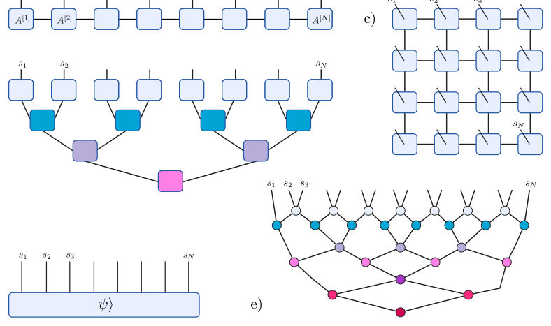
<figcaption class="paper-figure-caption"><b>Fig 1.</b> Figure 1: Examples of TNs: a) MPS for a chain of length 8, b) binary tree TN for a system of 8 sites, c) projected entangled pair state for a system with 4 × 4 sites in a square lattice geometry, d) many- body wave function represented as a single N-leg tensor and e) multi-scale entanglement renormalization ansatz (MERA) TN. Each box (or circle) represents a tensor, and each leg represents an index of the tensor. In this representation the open legs (labeled s1, . . . , sN) that are not connected to any other tensor represent the physical indices. They correspond to the degrees of freedom of the physical system (e.g., spin states, where for a spin-S system such indices can take 2S + 1...</figcaption>
</figure>
<figure class="paper-figure-card">
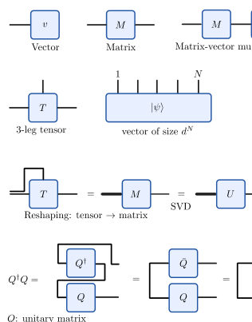
<figcaption class="paper-figure-caption"><b>Fig 2.</b> Figure 3: Graphical representation of a few tensor examples and associated operations.</figcaption>
</figure>
<figure class="paper-figure-card">
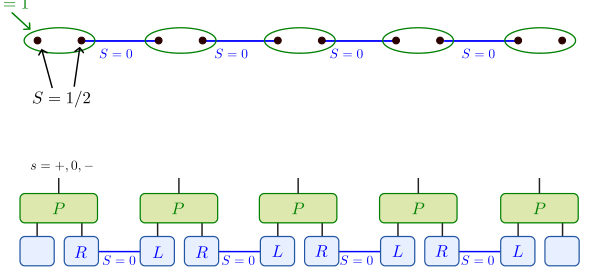
<figcaption class="paper-figure-caption"><b>Fig 3.</b> Figure 4: AKLT state for a spin-1 chain. a) The Hilbert space is enlarged by replacing each spin-1 (green ovals) by two fictitious spin- 1</figcaption>
</figure>
<figure class="paper-figure-card">
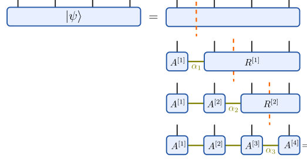
<figcaption class="paper-figure-caption"><b>Fig 4.</b> Figure 5: Construction of an MPS from a vector representation by successive QR decompositions. At each step, the Q matrix gives an MPS tensor A[i], while the R matrix is reshaped and factorized again at the next site. Such a construction leads to an MPS in a left-canonical gauge (see Fig. 8).</figcaption>
</figure>
<figure class="paper-figure-card">
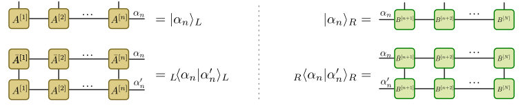
<figcaption class="paper-figure-caption"><b>Fig 5.</b> Figure 6: Partial contractions of a left-canonical MPS and a right-canonical MPS. For each value of the open virtual index αn, the left contraction defines a state |αn⟩L in the Hilbert space of the first n sites, while the right contraction defines a state |αn⟩R in the Hilbert space of sites n + 1, . . . , N. The corresponding canonical conditions imply that these states form orthonormal families. See also Fig. 8.</figcaption>
</figure>
</div>

<p><strong>Summary.</strong> This comprehensive set of notes introduces tensor networks, focusing heavily on Matrix-Product States (MPS), as a computational tool for quantum many-body physics. It details the mathematical machinery required—including entanglement measures and canonical forms—to simulate ground states, time evolution, and open system dynamics efficiently. The work is essential reading for anyone using numerical methods to study strongly correlated or dissipative quantum matter.</p>
<p><strong>Why it may be interesting.</strong> This is highly relevant as it provides a complete methodological toolkit for simulating dynamics in complex, interacting quantum systems, directly applicable to modeling decoherence or non-equilibrium steady states in AMO physics.</p>
<details>
<summary>Detailed structure</summary>
<p><strong>Main problem.</strong> To provide a comprehensive introduction to tensor-network (TN) methods, particularly Matrix-Product States (MPS), for efficiently simulating quantum many-body systems.</p>
<p><strong>Main result.</strong> TNs offer a powerful framework that encodes the entanglement structure of a state, allowing polynomial scaling simulations for states obeying an area law, which is crucial for 1D and low-dimensional quantum physics.</p>
<p><strong>Method.</strong> The paper develops the mathematical language of TNs (graphical notation, bond dimensions) and details core algorithms like DMRG, time evolution methods (tDMRG/TEBD), and generalizations to PEPS for higher dimensions.</p>
<p><strong>Model / system.</strong> The notes cover a wide range of systems, including 1D quantum spin chains, open quantum systems governed by Lindblad dynamics, classical statistical mechanics models, and general quantum circuits.</p>
<p><strong>Key observables.</strong> Entanglement Entropy ($S_{vN}$), Bond Dimension ($\chi$), Magnetization $\langle\sigma^z_{N/2}
angle$, and the steady state density matrix $
ho_{ss}$.</p>
<p><strong>Important parameters / regimes.</strong> Bond dimension ($\chi$) controls accuracy vs. cost; the area law dictates efficient representability.</p>
<p><strong>Assumptions / limitations.</strong> The primary assumption is that the physical state or dynamics can be accurately captured by a low-rank tensor decomposition (i.e., obeying an area law).</p>
<p><strong>Figures summary.</strong> Figures illustrate MPS structures, PEPS generalizations to 2D lattices, and graphical representations of elementary tensor operations like contractions and SVD.</p>
<p><strong>Paper structure.</strong> The structure progresses logically from defining the basic TN language and MPS for 1D systems, through core algorithms (DMRG/time evolution), generalizing to higher dimensions (PEPS), and finally applying the formalism to open quantum systems and mixed states.</p>
</details>
<details>
<summary>Abstract</summary>
<p>These notes provide an introduction to tensor-network methods in quantum many-body physics, with an emphasis on matrix-product states (MPS). They develop the basic tensor-network language, including graphical notation, virtual indices, bond dimensions, gauge freedom, canonical forms, QR and singular-value decompositions, and the role of entanglement in controlling the efficiency of the representation. The main MPS algorithms are then introduced, including contractions, correlation functions, matrix-product operators, DMRG, and time-evolution methods. The notes also briefly discuss projected entangled-pair states (PEPS) as a higher-dimensional generalization of MPS, together with the basic ideas behind approximate PEPS contraction. Finally, tensor-network representations of mixed states, quantum channels, and Lindblad dynamics are presented, with applications to thermal states and open quantum systems. The presentation is accompanied by short Julia code examples based on ITensor, ITensorMPS, and TensorMixedStates. These notes were written for the 9th Les Houches Summer School on Computational Physics: Open Quantum Systems, held in June 2026.</p>
</details>
<p><sub><a href="#top">↑ back to top</a></sub></p>

<p><a id="paper-2606.24580"></a></p>
<h3 id="quantum-droplets-and-condensates-in-an-optical-lattice-coupled-to-a-dissipative-cavity-collective-excitations-and-non-equilibrium-dynamics"><a href="http://arxiv.org/abs/2606.24580v1">Quantum droplets and condensates in an optical lattice coupled to a dissipative cavity: Collective excitations and non-equilibrium dynamics</a></h3>
<p><strong>Authors:</strong> G. Vivek, Sudip Sinha, Subhasis Sinha<br>
<strong>Type:</strong> theory · <strong>Category:</strong> quantum gases · <strong>PDF:</strong> <a href="https://arxiv.org/pdf/2606.24580v1">https://arxiv.org/pdf/2606.24580v1</a><br>
<strong>Analysis basis:</strong> full PDF text, analyzed in chunks
<strong>Topic relevance:</strong> 🔥 <code>non-equilibrium dynamics</code> <strong>5/5</strong> · 🔥 <code>analog quantum simulation</code> <strong>4/5</strong> · 🔥 <code>driven-dissipative phase transition</code> <strong>4/5</strong> · <code>Tavis-Cummings &amp; cavity-many-emitter</code> <strong>3/5</strong> · <code>correlated cavity matter</code> <strong>3/5</strong> · <code>methods for driven-dissipative</code> <strong>3/5</strong> · <code>non-equilibrium universality</code> <strong>3/5</strong> · <code>correlated / nonlocal dissipation</code> <strong>2/5</strong> · <code>Frenkel-Kontorova</code> <strong>1/5</strong> · <code>Keldysh / 2PI / non-Gaussian methods</code> <strong>1/5</strong> · <code>entanglement &amp; information structure</code> <strong>1/5</strong></p>
<div class="figure-strip-hint">↔ Scroll figures horizontally</div>
<div class="paper-figures-scroll">
<figure class="paper-figure-card">
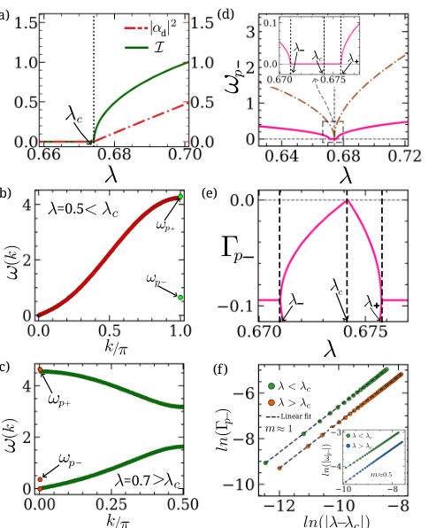
<figcaption class="paper-figure-caption"><b>Fig 1.</b> FIG. 1. Phase transition in the homogeneous system (ζ = 0) and ex- citation spectrum of the corresponding non-equilibrium steady states: (a) Variation of the steady state staggered density imbalance I (green solid line) and the photon number density |αd|2 (red dash-dotted line) across the transition point λc = 0.674. Excitation spectrum of the respective phases (b) before and (c) after the transition, where the collective polariton-like mode in each case is highlighted with a dif- ferent color. (d) Variation of frequency of the lowest collective mode (ωp−) with atom-photon coupling λ across the transition point. This mode vanishes at a point λ−&lt; λc, while it becomes gapped at a coupling...</figcaption>
</figure>
<figure class="paper-figure-card">
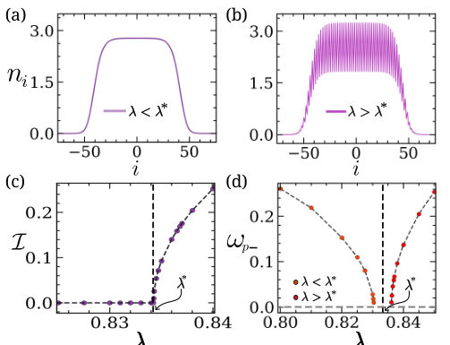
<figcaption class="paper-figure-caption"><b>Fig 2.</b> FIG. 2. Properties of the steady states in the droplet regime (ζ ̸= 0): (a) Flat-top droplet solution for λ = 0.5 &lt; λ∗, characterized by an almost uniform density in the bulk. (b) Staggered (superradiant) droplet solution for λ = 0.85 &gt; λ∗, where a density modulation is induced between the neighboring lattice sites. (c) Variation of the steady state staggered imbalance I across the crossover point. (d) Behavior of the collective polaritonic mode with coupling strength λ, exhibiting a trend that follows that of a dissipative phase transition. The crossover point marked by vertical dashed lines in (c,d) is λ∗≃ 0.834. Parameters chosen: n0 = 1.47, u = 0.04, ζ = 0.1, and κ = 0.1.</figcaption>
</figure>
<figure class="paper-figure-card">
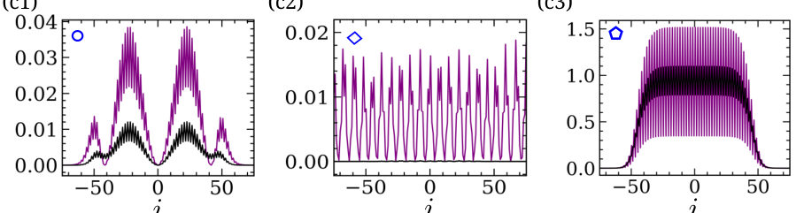
<figcaption class="paper-figure-caption"><b>Fig 3.</b> FIG. 3. Excitation spectrum of the droplet states (ζ ̸= 0): (a) Full excitation spectrum of the droplet phase before (blue) and after (red) the transition. (b) Zoomed view of the low energy excitations of the (a) flat-top droplet case (λ = 0.5 &lt; λ∗) and (b) the staggered droplet phase (λ = 0.85 &gt; λ∗) are shown, where the dashed line (−µ) denotes the threshold for the bound states. The markers in (b,c) correspond to the particle-like (δχi, solid magenta lines) and hole-like (δχ∗ i , solid black lines) fluctuations of (b1,c1) a localized bound state, (b2,c2) an extended scattering state, and the (b3,c3) collective polariton-like mode, for the flat-top and the staggered droplet phases,...</figcaption>
</figure>
<figure class="paper-figure-card">
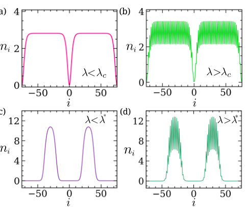
<figcaption class="paper-figure-caption"><b>Fig 4.</b> FIG. 4. Non-equilibrium (metastable) solutions: Density profiles of the kink-like solutions (a)[(c)] below and (b)[(d)] above the transition [crossover] point λc = 0.65 [λ∗≃0.648]. The condensate exhibits localized density dips (kinks) embedded in either a homogeneous or droplet background. Panels (a,b) correspond to the homogeneous case (ζ = 0); (a) for λ = 0.2 &lt; λc, the density vanishes at the center and at the lattice boundaries but remains otherwise uniform, and (b) for λ = 0.66 &gt; λc, the background develops a staggered density modulation while preserving the kink structure. Panels (c,d) show the double-droplet solutions for ζ = 0.2; (c) for λ = 0.2 &lt; λ∗, the kink is embedded in a...</figcaption>
</figure>
<figure class="paper-figure-card">
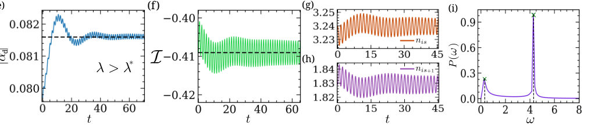
<figcaption class="paper-figure-caption"><b>Fig 5.</b> FIG. 5. Real-time dynamics in the droplet regime: The first row (panels (a)–(d)) corresponds to λ = 0.5 &lt; λ∗, where the system evolves around the flat-top droplet steady state. The second row (panels (e)–(i)) correspond to λ = 0.85 &gt; λ∗, where the evolution occurs around the staggered droplet state with finite photon number density. The crossover point is λ∗≃0.834. Dynamics of the (a,e) photon number density |αd|2 and (b,f) staggered imbalance I. The black dashed lines denote the corresponding steady state values. (c,g,h) Dynamics of the local densities at neighboring sites, nis and nis+1, exhibiting out-of-phase oscillations. (d,i) Fourier spectrum of I from (b,f). The dominant peaks...</figcaption>
</figure>
</div>

<p><strong>Summary.</strong> This paper theoretically explores the rich non-equilibrium dynamics of Bose condensates and quantum droplets coupled to a dissipative optical cavity. By analyzing collective excitations and stability, the authors characterize a density ordering transition marked by polariton softening. Crucially, they show that the system can exhibit long-lived metastable states, such as double-droplets, even when those states are predicted to be unstable.</p>
<p><strong>Why it may be interesting.</strong> This work is highly relevant as it merges concepts from cavity QED (dissipation, polaritons) with quantum gas physics (BEC, droplets), providing a theoretical framework to model complex, driven non-equilibrium phenomena accessible in modern experimental setups.</p>
<details>
<summary>Detailed structure</summary>
<p><strong>Main problem.</strong> The study investigates non-equilibrium dynamics, collective excitations, and phase transitions in a system combining quantum droplets/condensates with a dissipative cavity mode.</p>
<p><strong>Main result.</strong> The research identifies a polariton-like gapped excitation whose frequency softens near the density ordering transition, and demonstrates that metastable states (like double-droplets) can persist dynamically even when theoretically unstable.</p>
<p><strong>Method.</strong> A classical-field approach is used to determine stationary states and linearize equations of motion around these states to analyze collective excitations and stability. Time evolution simulations are also employed for quench dynamics.</p>
<p><strong>Model / system.</strong> The system models a dilute Bose gas (condensate) and self-bound quantum droplets confined in a 1D optical lattice, coupled to a lossy cavity mode via mean-field interactions.</p>
<p><strong>Key observables.</strong> Collective excitation frequencies ($\omega_{p\pm}$), relaxation time divergence near critical points, staggered density imbalance ($I$), and the persistence of non-equilibrium states (kinks, double-droplets).</p>
<p><strong>Important parameters / regimes.</strong> The atom-cavity coupling strength ($\lambda$) relative to a critical value ($\lambda_c$ or $\lambda^*$), lattice parameters ($J$, $V$), and interaction strengths ($\zeta$).</p>
<p><strong>Assumptions / limitations.</strong> The analysis relies on the classical-field approximation and mean-field theory, which is assumed valid in 1D under specific parameter regimes.</p>
<p><strong>Figures summary.</strong> Figures illustrate the phase transition (staggered imbalance vs. coupling), excitation spectra showing polariton branches ($\omega_\pm(k)$), and real-time dynamics demonstrating density wave oscillations and the persistence of odd-parity metastable states after a quench.</p>
<p><strong>Paper structure.</strong> The paper progresses by first establishing the mean-field model, then analyzing steady states and collective excitations (Bogoliubov modes vs. polaritons). It details the phase transition driven by coupling strength ($\lambda$), followed by investigating non-equilibrium dynamics through time evolution simulations of metastable configurations like kinks and double-droplets.</p>
</details>
<details>
<summary>Abstract</summary>
<p>Motivated by recent experiments on light-matter interacting systems, we investigate a dilute Bose gas and self-bound quantum droplets in a one-dimensional optical lattice coupled to a lossy cavity mode. Using a classical-field approach, we determine the stationary states and collective excitations of this non-equilibrium system. Apart from the usual Bogoliubov modes, we identify a polariton-like gapped excitation, the frequency of which softens as a precursor of the density ordering transition. Moreover, its relaxation time diverges as the critical point is approached, signaling the non-equilibrium nature of this transition. Dynamically, this polariton-like mode can be probed by inducing cavity field fluctuations, which in turn generates spatio-temporal oscillations of both the condensate and droplet states. In the droplet regime, we also analyze the bound modes which bear the characteristics of such non-equilibrium self-bound state. In addition, we uncover solitonic non-equilibrium states, including condensate with kink-like configuration and double-droplet state, and investigate their robustness following a sudden quench. Remarkably, although these states become unstable beyond a critical coupling, they continue to manifest in the dynamics, akin to the scarring phenomena. Our results demonstrate that dissipative cavity coupling provides a versatile route for exploring rich non-equilibrium dynamics of condensates and quantum droplets within experimentally accessible settings.</p>
</details>
<p><sub><a href="#top">↑ back to top</a></sub></p>

<p><a id="paper-2606.24395"></a></p>
<h3 id="out-of-equilibrium-scaling-of-the-particle-density-in-quantum-fermionic-wires-after-a-critical-quenching-of-the-chemical-potential"><a href="http://arxiv.org/abs/2606.24395v1">Out-of-equilibrium scaling of the particle density in quantum fermionic wires after a critical quenching of the chemical potential</a></h3>
<p><strong>Authors:</strong> H. Panagopoulos, E. Vicari<br>
<strong>Type:</strong> theory · <strong>Category:</strong> statistical mechanics · <strong>PDF:</strong> <a href="https://arxiv.org/pdf/2606.24395v1">https://arxiv.org/pdf/2606.24395v1</a><br>
<strong>Analysis basis:</strong> full PDF text, analyzed in chunks
<strong>Topic relevance:</strong> 🔥 <code>non-equilibrium universality</code> <strong>5/5</strong> · 🔥 <code>non-equilibrium dynamics</code> <strong>4/5</strong> · <code>driven-dissipative phase transition</code> <strong>3/5</strong> · <code>analog quantum simulation</code> <strong>2/5</strong> · <code>Frenkel-Kontorova</code> <strong>1/5</strong> · <code>Keldysh / 2PI / non-Gaussian methods</code> <strong>1/5</strong> · <code>correlated / nonlocal dissipation</code> <strong>1/5</strong> · <code>entanglement &amp; information structure</code> <strong>1/5</strong> · <code>methods for driven-dissipative</code> <strong>1/5</strong></p>
<div class="figure-strip-hint">↔ Scroll figures horizontally</div>
<div class="paper-figures-scroll">
<figure class="paper-figure-card">
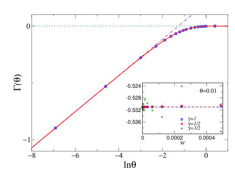
<figcaption class="paper-figure-caption"><b>Fig 1.</b> FIG. 1: We show the scaling function Γ(θ) (full line) ob- tained in Eq. (36), and compare it with the numerical re- sults obtained by taking the out-of-equilibrium scaling limit, i.e., t →∞and w →0 keeping θ fixed, of γD(t, w, γ)/w (whose estimated errors are very small, indeed they are al- most invisible in the figure). The dot-dashed and dotted lines show the asymptotic behaviors for θ →0 and θ →∞, respectively. The inset shows the approach to the asymp- totic value Γ(θ) for θ = 0.01 and various values of γ, i.e., γ = 1, 1/2, 3/2. The dashed line indicates the asymptotic value Γ(0.01) = −0.531027....</figcaption>
</figure>
<figure class="paper-figure-card">
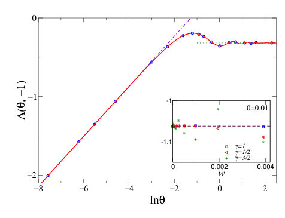
<figcaption class="paper-figure-caption"><b>Fig 2.</b> FIG. 2: We show the exact expression (55) (full line) for the scaling function Λ(θ, u = −1), comparing it with the nu- merical results obtained by taking the scaling limit t →∞ and w →0 keeping θ and u = we/w fixed. The dot- dashed and dotted lines show the asymptotic behaviors for θ →0 and θ →∞, respectively. The inset shows the ap- proach to the asymptotic value Λ(θ, −1) for θ = 0.01 and γ = 1, 1/2, 3/2. The dashed line indicates the asymptotic value Λ(0.01, −1) = −1.0621814....</figcaption>
</figure>
</div>

<p><strong>Summary.</strong> This work analyzes how the particle density evolves in quantum fermionic wires immediately after a sudden change (quench) of the chemical potential near a quantum critical point. The authors analytically derive that this out-of-equilibrium evolution follows a universal scaling law, providing strong theoretical evidence for dynamic scaling behavior previously suggested by numerical simulations.</p>
<p><strong>Why it may be interesting.</strong> It provides a rigorous theoretical framework for identifying universal dynamic scaling laws in quantum many-body systems after non-equilibrium perturbations, which is crucial for understanding critical dynamics beyond equilibrium measurements.</p>
<details>
<summary>Detailed structure</summary>
<p><strong>Main problem.</strong> The study investigates the out-of-equilibrium scaling behavior of particle density in quantum fermionic wires following an instantaneous quench of the chemical potential near a quantum critical point.</p>
<p><strong>Main result.</strong> The difference between the post-quench particle density and its critical value exhibits universal out-of-equilibrium dynamic scaling, characterized by a specific singular function $\Gamma(	heta)$.</p>
<p><strong>Method.</strong> Analytical derivations are used to establish the scaling ansatz, comparing results with numerical finite-size scaling analyses.</p>
<p><strong>Model / system.</strong> The system is modeled using quantum fermionic Kitaev wires (equivalent to XY spin chains) near their quantum critical point. The Hamiltonian involves tunable parameters like chemical potential ($\mu$) and coupling constant ($\gamma$).</p>
<p><strong>Key observables.</strong> Particle density $\langle \hat{n} 
angle$ and the difference between the post-quench particle density and its critical equilibrium value.</p>
<p><strong>Important parameters / regimes.</strong> Time ($t$), initial length scale ($\xi$), deviation from criticality ($w$), and dynamic scaling variable $   heta \sim t/\xi^z$.</p>
<p><strong>Assumptions / limitations.</strong> The analysis assumes starting from the ground state near the QCP and relies on approximations (e.g., $\sin k \approx k$) to find asymptotic limits.</p>
<p><strong>Figures summary.</strong> Figure 1 compares the derived scaling function $\Gamma(	heta)$ with numerical results obtained by taking the out-of-equilibrium limit; Figure 2 shows a generalized scaling function $\Lambda(	heta, u)$ for different initial conditions.</p>
<p><strong>Paper structure.</strong> The paper establishes the physical context (Kitaev wires at QCP), derives the general scaling ansatz for the particle density difference, and then calculates the asymptotic form of the universal scaling function $\Gamma(	heta)$ by taking appropriate limits.</p>
</details>
<details>
<summary>Abstract</summary>
<p>We study the out-of-equilibrium scaling behavior of the particle density in quantum fermionic Kitaev wires, after instantaneous quantum quenches (QQs) of the chemical potential within their quantum critical region. The critical scaling of the ground-state particle density is known to be subleading at its Ising-like quantum transition, hidden by regular and logarithmic terms arising from peculiar mixings with the identity operator. This situation changes along the out-of-equilibrium dynamics arising from QQs of the chemical potential to the critical point, starting from the ground state for Hamiltonian parameters within the critical region. We analytically show that the difference between the post-QQ particle density and its critical value develops an out-of-equilibrium scaling behavior, in terms of the dynamic scaling variable $θ\sim t/ξ^z$ (where $t>0$ is the post-QQ time, $ξ$ is the length scale of the initial state, and $z$ is the dynamic critical exponent) associated with the post-QQ time evolution. The scaling function turns out to have a peculiar singular behavior in the $θ\to 0$ limit, apparently related to the anomalous equilibrium scaling behavior of the particle density at the starting point of the QQ protocol. This provides analytical evidence of earlier conjectures on the general emergence of post-QQ dynamic scaling behaviors of the subtracted particle density (supported by numerical finite-size scaling analyses), unlike their equilibrium counterpart which turns out to be dominated by nonuniversal contributions.</p>
</details>
<p><sub><a href="#top">↑ back to top</a></sub></p>

<p><a id="paper-2606.24798"></a></p>
<h3 id="anomalous-weak-values-in-a-generalized-mach-zehnder-interferometer-extracted-directly-from-intensity-measurements"><a href="http://arxiv.org/abs/2606.24798v1">Anomalous weak values in a generalized Mach-Zehnder interferometer extracted directly from intensity measurements</a></h3>
<p><strong>Authors:</strong> Ismaele V. Masiello, Hartmut Lemmel, Andreas Dvorak, Stephan Sponar, Yuji Hasegawa<br>
<strong>Type:</strong> experiment · <strong>Category:</strong> other · <strong>PDF:</strong> <a href="https://arxiv.org/pdf/2606.24798v1">https://arxiv.org/pdf/2606.24798v1</a><br>
<strong>Analysis basis:</strong> full PDF text, analyzed in chunks
<strong>Topic relevance:</strong> 🔥 <code>quantum measurements</code> <strong>5/5</strong> · <code>interference shaping light</code> <strong>3/5</strong> · <code>measurement-induced transitions</code> <strong>1/5</strong> · <code>quantum optics experiment</code> <strong>1/5</strong></p>
<div class="figure-strip-hint">↔ Scroll figures horizontally</div>
<div class="paper-figures-scroll">
<figure class="paper-figure-card">
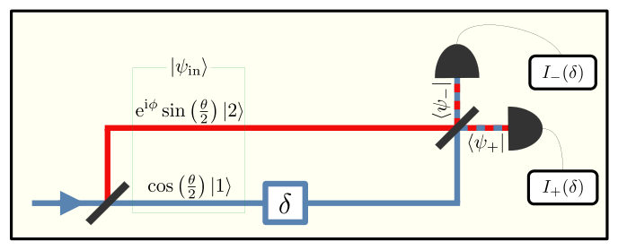
<figcaption class="paper-figure-caption"><b>Fig 1.</b> Figure 1: Generalized Mach–Zehnder interferometer configuration. The first beam splitter generates the superposition of path states |1⟩and |2⟩, with relative phase ϕ and relative path intensities cos2 θ</figcaption>
</figure>
<figure class="paper-figure-card">
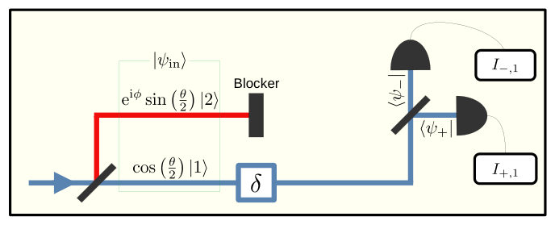
<figcaption class="paper-figure-caption"><b>Fig 2.</b> Figure 2: Configuration for single-beam intensity measurement to be performed blocking each path. A blocker is inserted in one of the paths, path 2 in the example depicted in the figure, in order to measure I±,j.</figcaption>
</figure>
<figure class="paper-figure-card">
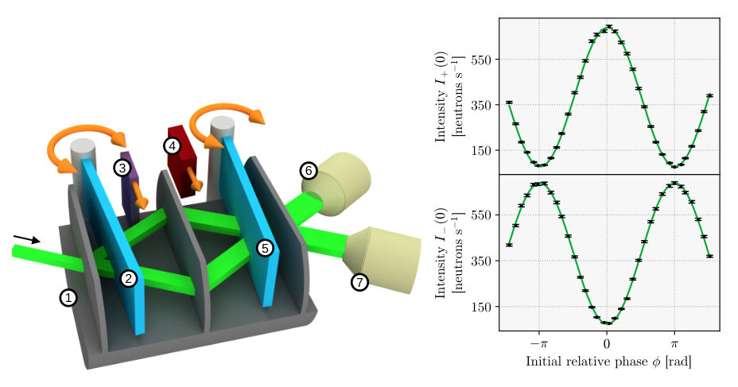
<figcaption class="paper-figure-caption"><b>Fig 3.</b> Figure 3: 3D representation of the neutron interferometer setup and typical sinusoidal intensity modulation depending on the relative phase ϕ of the initial state. (On the left side) The neutron enters the silicon crystal interferometer 1 ○. At the first plate, the neutron is prepared in a 50-50 superposition of the path states. A sapphire phase shifter plate 2 ○placed just after the first plate is used to control the initial phase ϕ. An absorber made of two indium foils 3 ○is inserted to produce the unbalanced configuration (different path intensities) of the interferometer or removed to leave it in the balanced configuration (equal path intensities). A Cadmium beam blocker 4 ○can be...</figcaption>
</figure>
<figure class="paper-figure-card">
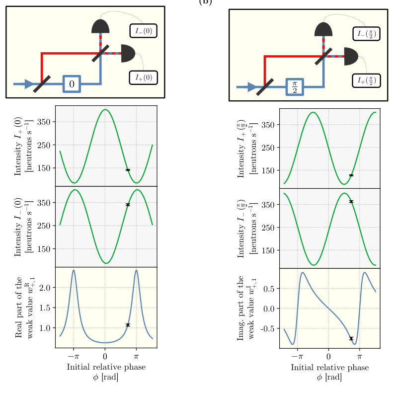
<figcaption class="paper-figure-caption"><b>Fig 4.</b> Figure 4: Typical measurement procedure to extract (a) the real and (b) the imaginary part of the weak value, together with their results. The initial state |ψin⟩is generated with relative phase ϕ ≈3π/4 and path intensities ratio sin2  θ</figcaption>
</figure>
<figure class="paper-figure-card">
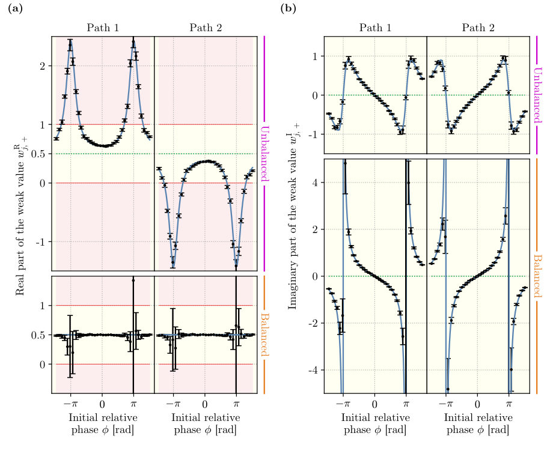
<figcaption class="paper-figure-caption"><b>Fig 5.</b> Figure 5: Resulting weak values (data points) together with the theoretical prediction (continuous line). The results for the weak value are plotted as their (a) real and (b) imaginary part for the different values of the initial relative phase ϕ. The top plots show the result for the unbalanced configuration the bottom plots show the results for the balanced configuration. The results are in good agreement with the theory. The region in which the weak values become anomalous is highlighted in red. The green dotted line represents the symmetry axis of the weak-value components. The real part is symmetric about 0.5, while the imaginary part is symmetric about 0, confirming w+,1 + w+,2 = 1.</figcaption>
</figure>
</div>

<p><strong>Summary.</strong> The paper presents an innovative method to measure path weak-values in a Mach-Zehnder interferometer using only direct intensity measurements, bypassing the need for complicated meter states or weak interactions. By analyzing these intensities, the researchers successfully identified anomalous weak values, providing experimental evidence of nonclassical quantum behavior and contextuality in matter waves.</p>
<p><strong>Why it may be interesting.</strong> This work provides a highly practical, simplified measurement protocol for accessing fundamental quantum quantities like weak values in complex interferometers, which is crucial for testing foundational principles of quantum mechanics beyond standard measurements.</p>
<details>
<summary>Detailed structure</summary>
<p><strong>Main problem.</strong> To characterize path weak-values in a generalized Mach-Zehnder interferometer without relying on complex techniques like meter states or weak interactions.</p>
<p><strong>Main result.</strong> The authors successfully extracted path weak-values directly from intensity measurements, identifying anomalous values that confirm the nonclassical behavior and contextuality of the quantum system.</p>
<p><strong>Method.</strong> Weak values are derived by relating measured output intensities $I_{\pm}(\delta)$—obtained solely through controlled relative phase shifts $\delta$ at the interferometer outputs—to the path weak-values using specific equations.</p>
<p><strong>Model / system.</strong> The experiment uses a matter-wave interferometry setup, specifically a neutron Mach-Zehnder interferometer, modeling the system as a two-level quantum superposition of spatially separated paths.</p>
<p><strong>Key observables.</strong> Path weak-values ($    ext{w}_{\pm,j}$), outgoing beam intensities $I_{\pm}(\delta)$, and single-beam path intensities ($I_{+,1}, I_{+,2}$).</p>
<p><strong>Important parameters / regimes.</strong> Controlled relative phase shift ($\delta$), initial relative phase ($\phi$), contrast reduction factor ($C$).</p>
<p><strong>Assumptions / limitations.</strong> The analysis incorporates corrections for contrast reduction due to experimental imperfections and notes that the extraction method is sensitive to intensity measurements approaching zero.</p>
<p><strong>Figures summary.</strong> Figures illustrate the MZI setup, show sinusoidal modulation of intensities vs. phase shifts, and present plots comparing extracted weak values ($ ext{w}_R$ and $ ext{w}_I$) for both unbalanced (anomalous) and balanced configurations.</p>
<p><strong>Paper structure.</strong> The paper establishes the theory of weak values, details the generalized MZI setup, derives the relationship between measurable intensities and weak values, presents methods to handle experimental imperfections (contrast reduction), and finally demonstrates the extraction process using neutron interferometry data.</p>
</details>
<details>
<summary>Abstract</summary>
<p>Weak values provide a powerful framework for characterizing quantum systems. Their experimental extraction conventionally relies on weak conditioned von Neumann measurements, involving weak interactions and meter states that increase experimental complexity and often limit measurement efficiency. Here we introduce a method to fully characterize path weak-values in a generalized Mach-Zehnder interferometer employing neither meter states nor weak interactions. We experimentally demonstrate the technique in matter-wave interferometry. We identify anomalous weak values and, equivalently, negative quasiprobability distributions, which reflect the nonclassical behavior of the quantum system. The approach relies uniquely on intensity measurements at the output ports of the interferometer combined with controlled relative phase shifts between the paths. The absence of meter states enables considerable simplification of the setup and shorter measurement times, while preserving full access to weak values with comparable or increased accuracy. The scheme is directly applicable to a broad class of experiments involving two-level quantum systems.</p>
</details>
<p><sub><a href="#top">↑ back to top</a></sub></p>

<p><a id="paper-2606.24360"></a></p>
<h3 id="multipartite-synchronization-residuals-in-driven-dissipative-spin-networks"><a href="http://arxiv.org/abs/2606.24360v1">Multipartite synchronization residuals in driven-dissipative spin networks</a></h3>
<p><strong>Authors:</strong> Jatin Ghildiyal, Shubhrangshu Dasgupta, Asoka Biswas<br>
<strong>Type:</strong> theory · <strong>Category:</strong> other · <strong>PDF:</strong> <a href="https://arxiv.org/pdf/2606.24360v1">https://arxiv.org/pdf/2606.24360v1</a><br>
<strong>Analysis basis:</strong> full PDF text, analyzed in chunks
<strong>Topic relevance:</strong> 🔥 <code>Tavis-Cummings &amp; cavity-many-emitter</code> <strong>4/5</strong> · 🔥 <code>methods for driven-dissipative</code> <strong>4/5</strong> · <code>analog quantum simulation</code> <strong>3/5</strong> · <code>correlated / nonlocal dissipation</code> <strong>3/5</strong> · <code>correlated cavity matter</code> <strong>3/5</strong> · <code>driven-dissipative phase transition</code> <strong>3/5</strong> · <code>entanglement &amp; information structure</code> <strong>3/5</strong> · <code>exotic spin models in light-matter</code> <strong>2/5</strong> · <code>non-equilibrium dynamics</code> <strong>2/5</strong> · <code>non-equilibrium universality</code> <strong>2/5</strong> · <code>Keldysh / 2PI / non-Gaussian methods</code> <strong>1/5</strong> · <code>Rydberg arrays</code> <strong>1/5</strong> · <code>spintronics-quantum-optics interface</code> <strong>1/5</strong></p>
<div class="figure-strip-hint">↔ Scroll figures horizontally</div>
<div class="paper-figures-scroll">
<figure class="paper-figure-card">
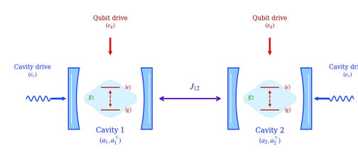
<figcaption class="paper-figure-caption"><b>Fig 1.</b> FIG. 1. Schematic representation of two qubits inside a coupled-cavity system.</figcaption>
</figure>
<figure class="paper-figure-card">
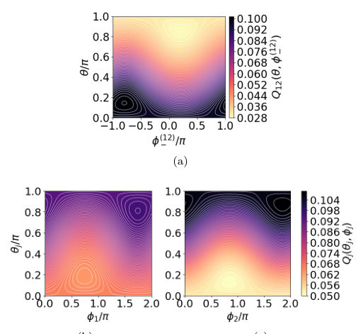
<figcaption class="paper-figure-caption"><b>Fig 2.</b> FIG. 2. Density plots of steady-state Husimi-Q distributions (a) Q12, (b) Q1, and (c) Q2, in their respective parameter space. We have chosen ∆c = 5, ∆1,2 = (1, 2), J12 = 1, g1,2 = 0.2, εq,c = 1.0, the relaxation rate γ1,2 = 0.1, and the dephasing rate γϕ1,2 = 0.5. All parameters are normalized in terms of J12.</figcaption>
</figure>
<figure class="paper-figure-card">
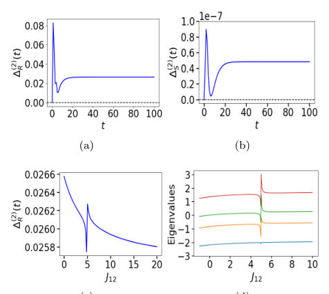
<figcaption class="paper-figure-caption"><b>Fig 3.</b> FIG. 3. Time evolution of (a) the synchronization residual ∆(2) R (t), (b) the entropic residual ∆(2) S (t), for J12 = 1. Panels (c) and (d) show, respectively, the steady-state value of ∆(2) R and the effective energy eigenspectrum as functions of inter- cavity hopping. All other parameters are the same as in Fig. 2.</figcaption>
</figure>
<figure class="paper-figure-card">
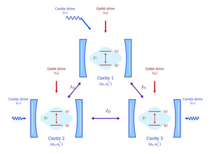
<figcaption class="paper-figure-caption"><b>Fig 4.</b> FIG. 4. Schematic representation of three qubits inside a triangular cavity coupled system.</figcaption>
</figure>
<figure class="paper-figure-card">

<figcaption class="paper-figure-caption"><b>Fig 5.</b> Figure 3c shows the steady-state synchronization resid- ual ∆(2) R (t) as a function of the intercavity hopping am- plitude J12. In an otherwise monotonically decreasing profile, one sees a sharp feature at J12 ∼∆c = 5. This is an artefact of a singularity at J12 = ∆c of the adiabatic Hamiltonian, that leads to a level crossing as can be seen from the variation of its eigenvalues with J12 (see Fig. 3d). Note that, at this parameter regime, the adiabatic approximations fail, and to investigate the synchroniza- tion, on needs to solve the dynamics with the original Hamiltonian (13). In this paper, we, however, focus on</figcaption>
</figure>
</div>

<p><strong>Summary.</strong> The paper develops phase-space measures to quantify quantum synchronization in driven-dissipative spin networks. By analyzing the resulting residuals for two and three qubits, the authors demonstrate a key distinction: phase-sensitive measures can reveal collective locking (negative residual) that is not captured by standard entropic correlation measures. This highlights that different mathematical tools probe distinct physical aspects of open system dynamics.</p>
<p><strong>Why it may be interesting.</strong> This work provides a sophisticated diagnostic tool—the synchronization residual—to distinguish between genuine multipartite quantum correlations (which violate simple additive bounds) and those that can be decomposed into pairwise interactions within open quantum systems dynamics.</p>
<details>
<summary>Detailed structure</summary>
<p><strong>Main problem.</strong> The central problem is quantifying multipartite quantum synchronization, specifically determining if collective phase coherence can be fully described by summing up pairwise contributions.</p>
<p><strong>Main result.</strong> For three qubits in a driven-dissipative network, the phase-space derived tripartite residual becomes negative, indicating genuine collective locking beyond pairwise description, while entropy-based residuals remain non-negative.</p>
<p><strong>Method.</strong> The authors introduce and analyze novel synchronization residuals built from first angular moments of phase distributions obtained via Husimi-Q quasiprobability functions in the phase space.</p>
<p><strong>Model / system.</strong> The study uses a driven-dissipative quantum Rabi network involving two or three qubits coupled to cavity modes. The analysis is performed in the dispersive adiabatic regime, leading to effective qubit Hamiltonians.</p>
<p><strong>Key observables.</strong> Phase-space synchronization residuals ($\Delta^{(3)}_R$), bipartite residual ($\Delta^{(2)}_R$), and corresponding entropy-based residuals ($\Delta^{(3)}_S$).</p>
<p><strong>Important parameters / regimes.</strong> Dispersive adiabatic regime; two-qubit and three-qubit coupling strengths ($J_{ij}$); cavity detunings ($\Delta_c, \Delta_i$); decay rates ($\gamma$).</p>
<p><strong>Assumptions / limitations.</strong> The analysis relies on using Husimi-Q quasiprobability distributions to approximate the true phase distributions in open quantum systems.</p>
<p><strong>Figures summary.</strong> Figure 1 schematically illustrates two qubits coupled to a cavity system, while other figures likely compare different residual types or show time evolution of synchronization measures.</p>
<p><strong>Paper structure.</strong> The paper develops theoretical bounds (analogous to subadditivity/strong subadditivity) for multi-partite coherence measures. It calculates these residuals for 2 and 3 qubits in a specific physical model, comparing the results derived from phase-space moments versus entropy correlations.</p>
</details>
<details>
<summary>Abstract</summary>
<p>We introduce a phase-space measure of quantum synchronization that quantifies relative phase localization for two-qubit and three-qubit systems. This measure is built from the first angular moments of phase distributions obtained from Husimi-Q quasiprobability functions. Using this framework, we formulate a new class of synchronization residuals, motivated by subadditivity-type hierarchies of information-theoretic measures. We investigate these residuals in a driven-dissipative quantum Rabi network in the dispersive adiabatic regime. We show that, for two qubits, collective synchronization remains bounded by single-qubit contributions yielding a non-negative bipartite residual. The three-qubit nonequilibrium steady state exhibits a negative tripartite residual, which indicates collective phase synchronization, which cannot be described by pairwise decomposition. The corresponding entropy-based residuals, however, remain non-negative in both cases. Our results therefore, underscore that phase-sensitive synchronization measures and entropic correlation measures probe distinct aspects of open-system dynamics.</p>
</details>
<p><sub><a href="#top">↑ back to top</a></sub></p>

<p><a id="paper-2606.23999"></a></p>
<h3 id="suppressing-self-discharging-of-quantum-batteries-by-cavity-interactions"><a href="http://arxiv.org/abs/2606.23999v1">Suppressing Self-Discharging of Quantum Batteries by Cavity Interactions</a></h3>
<p><strong>Authors:</strong> Anass Jad, Abderrahim El Allati, Mohammad B. Arjmandi<br>
<strong>Type:</strong> theory · <strong>Category:</strong> other · <strong>PDF:</strong> <a href="https://arxiv.org/pdf/2606.23999v1">https://arxiv.org/pdf/2606.23999v1</a><br>
<strong>Analysis basis:</strong> full PDF text, analyzed in chunks
<strong>Topic relevance:</strong> 🔥 <code>correlated / nonlocal dissipation</code> <strong>4/5</strong> · 🔥 <code>methods for driven-dissipative</code> <strong>4/5</strong> · <code>Tavis-Cummings &amp; cavity-many-emitter</code> <strong>3/5</strong> · <code>correlated cavity matter</code> <strong>3/5</strong> · <code>driven-dissipative phase transition</code> <strong>3/5</strong> · <code>entanglement &amp; information structure</code> <strong>2/5</strong> · <code>non-equilibrium dynamics</code> <strong>2/5</strong> · <code>non-equilibrium universality</code> <strong>2/5</strong> · <code>Dicke superradiance</code> <strong>1/5</strong> · <code>Keldysh / 2PI / non-Gaussian methods</code> <strong>1/5</strong> · <code>analog quantum simulation</code> <strong>1/5</strong> · <code>scars &amp; prethermalization</code> <strong>1/5</strong></p>
<div class="figure-strip-hint">↔ Scroll figures horizontally</div>
<div class="paper-figures-scroll">
<figure class="paper-figure-card">
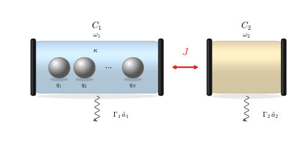
<figcaption class="paper-figure-caption"><b>Fig 1.</b> Figure 1. Sketch of the cavity-based quantum-battery architecture. A collection of N identical qubits {q1, q2, . . . , qN} of transition fre- quency ω0 is embedded in a common lossy cavity C1 (frequency ω1, decay rate Γ1) with which each qubit interacts at the same coupling strength κ. The cavity C1 is coherently coupled to an auxiliary cavity C2 (frequency ω2, decay rate Γ2) through a photon-exchange cou- pling of strength J. Both cavities are initially in the vacuum state and dissipate independently into their own thermal reservoirs at tem- peratures T1 and T2 (wavy arrows), with mean photon occupations ¯n1 and ¯n2. The inter-cavity coupling J and the number of qubits N are the central...</figcaption>
</figure>
<figure class="paper-figure-card">
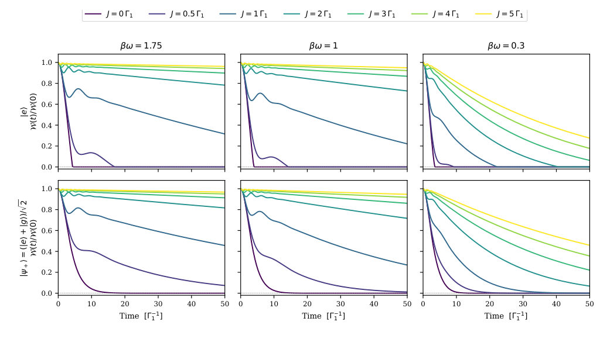
<figcaption class="paper-figure-caption"><b>Fig 2.</b> Figure 2. Normalised ergotropy W(t)/W(0) of the single-qubit battery for the two initial states of Eqs. (7a)–(7b) (rows; top: |e⟩, bottom: |ψ+⟩= (|e⟩+ |g⟩)/ √</figcaption>
</figure>
<figure class="paper-figure-card">
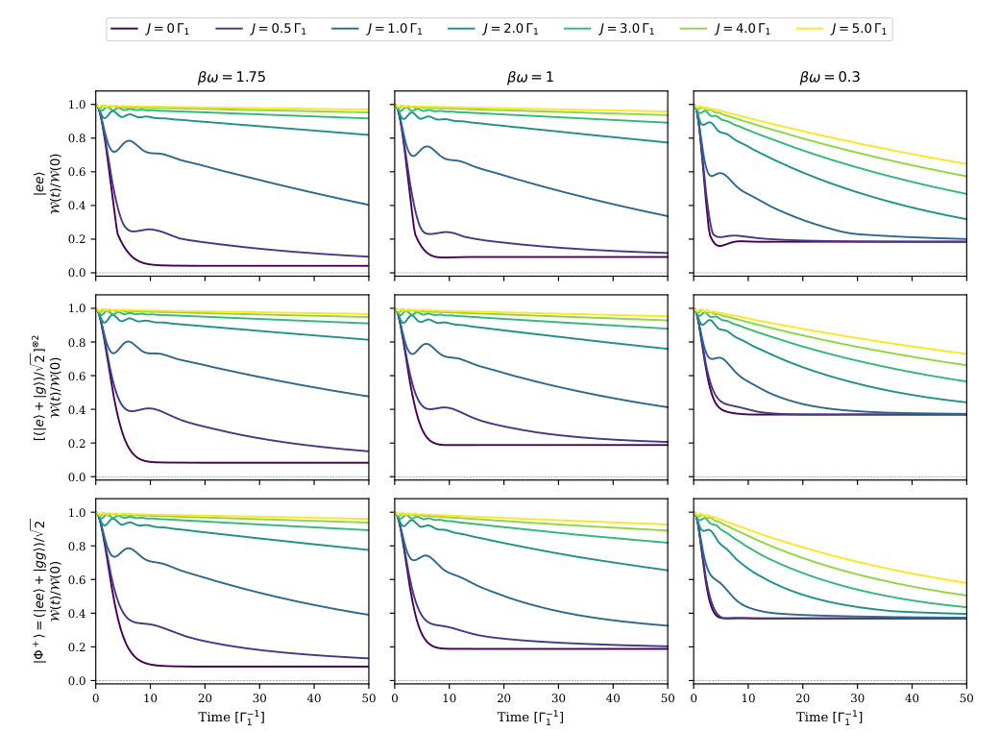
<figcaption class="paper-figure-caption"><b>Fig 3.</b> Figure 3. Normalised ergotropy W(t)/W(0) of a two-qubit battery in cavity C1 coupled to a auxiliary cavity C2, for three initial preparations (rows) and three inverse temperatures (columns). Top row: fully excited state |ee⟩. Middle row: product superposition [(|e⟩+ |g⟩)/ √</figcaption>
</figure>
<figure class="paper-figure-card">
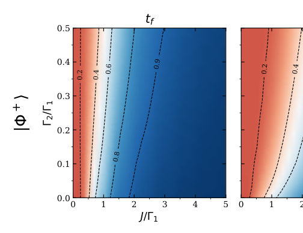
<figcaption class="paper-figure-caption"><b>Fig 4.</b> Figure 4. Robustness of the retained ergotropy W(tf )/W(0) for the Bell state |Φ+⟩= (|ee⟩+ |gg⟩)/ √</figcaption>
</figure>
<figure class="paper-figure-card">
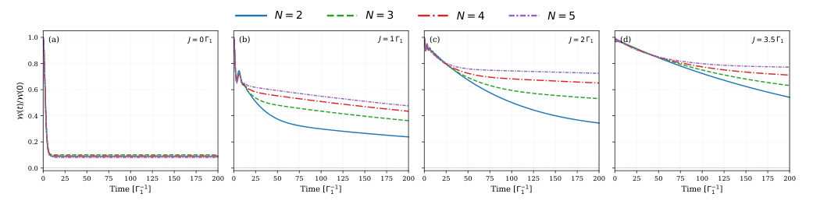
<figcaption class="paper-figure-caption"><b>Fig 5.</b> Figure 5. Normalised ergotropy W(t)/W(0) of the multi-qubit battery prepared in the GHZ state of Eq. (10), in the presence of an all-to-all Heisenberg coupling (Eq. (11), g = 0.5 Γ1), for N = 2 (blue solid), N = 3 (green dashed), N = 4 (red dash-dotted), and N = 5 (purple dash-double-dotted). Panels (a)–(d) correspond to J/Γ1 = 0, 1, 2, 3.5 respectively. Parameters: κ = 0.24 Γ1, Γ2 = 0, resonant configuration ω0 = ω1 = ω2 ≡ω, βω = 1 (¯n ≈0.58).</figcaption>
</figure>
</div>

<p><strong>Summary.</strong> The paper investigates how coupling a quantum battery's primary cavity to an auxiliary cavity can suppress energy loss mechanisms causing self-discharge. By analyzing ergotropy retention across single, two-, and multi-qubit systems, the authors show that inter-cavity coupling is highly beneficial. This establishes cavity-assisted protection as a robust strategy for building long-lived quantum energy storage devices.</p>
<p><strong>Why it may be interesting.</strong> This work directly addresses energy storage limitations in quantum devices by engineering structured environments (the auxiliary cavity) to protect stored coherence and extractable work, a key topic in open quantum systems and quantum thermodynamics.</p>
<details>
<summary>Detailed structure</summary>
<p><strong>Main problem.</strong> The primary goal is suppressing the self-discharging of stored quantum work (ergotropy) in a quantum battery due to energy leakage into the environment.</p>
<p><strong>Main result.</strong> Inter-cavity coupling significantly enhances the protection against self-discharge, and for multi-qubit systems, the retained ergotropy increases monotonically with the number of qubits due to collective effects.</p>
<p><strong>Method.</strong> The analysis uses a local Lindblad master equation treatment applied to a two-cavity architecture coupled to $N$ qubits.</p>
<p><strong>Model / system.</strong> The system consists of $N$ qubits in a lossy cavity ($C1$), which is coherently coupled to an auxiliary cavity ($C2$). The dynamics are governed by the full Hamiltonian and dissipation channels, analyzed under resonant conditions.</p>
<p><strong>Key observables.</strong> Ergotropy, $W(
ho_B)$, defined as the maximum extractable work unitarily from the reduced battery state $
ho_B$.</p>
<p><strong>Important parameters / regimes.</strong> Inter-cavity coupling strength ($J$), qubit-cavity coupling ($\kappa$), and mean thermal occupation ($ar{n}$) characterizing finite temperature.</p>
<p><strong>Assumptions / limitations.</strong> The analysis employs a local Lindblad treatment, assuming the system is in the weak-coupling Markovian regime.</p>
<p><strong>Figures summary.</strong> Figures illustrate how retained ergotropy ($W(t)/W(0)$) depends on $J/\Gamma_1$ (showing enhancement with coupling), and demonstrate size scaling for GHZ states, showing increasing retention with $N$.</p>
<p><strong>Paper structure.</strong> The paper systematically analyzes the problem starting from single-qubit systems, progressing to two-qubit entangled states (Bell states), and culminating in multi-qubit GHZ-charged batteries to establish scaling laws.</p>
</details>
<details>
<summary>Abstract</summary>
<p>We analyse a two-cavity architecture, in which a lossy cavity hosting $N$ qubits is coherently coupled to an auxiliary cavity, as a resource for the storage phase of an open quantum battery at non-zero temperature. Within a local Lindblad treatment in the resonant configuration, we find that the inter-cavity coupling enhances the suppression of self-discharging across every initial preparation, battery size, and temperature we examine, with the protection degrading smoothly as the mean thermal occupation increases. For a single qubit, the energy-basis coherence of a pure superposition leads to better long-time retention than fully excited state, highlighting the beneficial role of quantum coherence in protecting stored energy against thermal degradation. For two-qubit batteries, Bell-state preparations exhibit enhanced long-time ergotropy retention compared with the fully excited state, while the inclusion of qubit-qubit interactions produces only a weak dependence on the interaction type and strength within the parameter regime considered. Extending the analysis to multi-qubit GHZ-charged batteries with all-to-all Heisenberg interactions, we find that the normalized retained ergotropy increases monotonically with the number of qubits. This behavior is consistent with the collective enhancement of the qubit-cavity coupling in the symmetric Dicke manifold, indicating that larger quantum batteries can benefit from improved protection against self-discharge. These findings establish cavity-assisted protection as a promising strategy for mitigating self-discharging and realizing of long-lived quantum batteries in experimentally accessible platforms.</p>
</details>
<p><sub><a href="#top">↑ back to top</a></sub></p>

<p><a id="paper-2606.24615"></a></p>
<h3 id="quantum-enabled-active-matter-at-the-atomic-scale"><a href="http://arxiv.org/abs/2606.24615v1">Quantum-enabled active matter at the atomic scale</a></h3>
<p><strong>Authors:</strong> Sabrina Burgardt, Julian Feß, Alexander Guthmann, Silvia Hiebel, Aritra K. Mukhopadhyay, Sangyun Lee, Michael te Vrugt, Benno Liebchen, Hartmut Löwen, Raphael Wittkowski, Artur Widera<br>
<strong>Type:</strong> both · <strong>Category:</strong> other · <strong>PDF:</strong> <a href="https://arxiv.org/pdf/2606.24615v1">https://arxiv.org/pdf/2606.24615v1</a><br>
<strong>Analysis basis:</strong> full PDF text, analyzed in chunks
<strong>Topic relevance:</strong> 🔥 <code>analog quantum simulation</code> <strong>4/5</strong> · 🔥 <code>methods for driven-dissipative</code> <strong>4/5</strong> · <code>exotic spin models in light-matter</code> <strong>3/5</strong> · <code>non-equilibrium dynamics</code> <strong>3/5</strong> · <code>spintronics-quantum-optics interface</code> <strong>3/5</strong> · <code>driven-dissipative phase transition</code> <strong>2/5</strong> · <code>Keldysh / 2PI / non-Gaussian methods</code> <strong>1/5</strong> · <code>correlated / nonlocal dissipation</code> <strong>1/5</strong> · <code>entanglement &amp; information structure</code> <strong>1/5</strong> · <code>non-equilibrium universality</code> <strong>1/5</strong></p>
<div class="figure-strip-hint">↔ Scroll figures horizontally</div>
<div class="paper-figures-scroll">
<figure class="paper-figure-card">
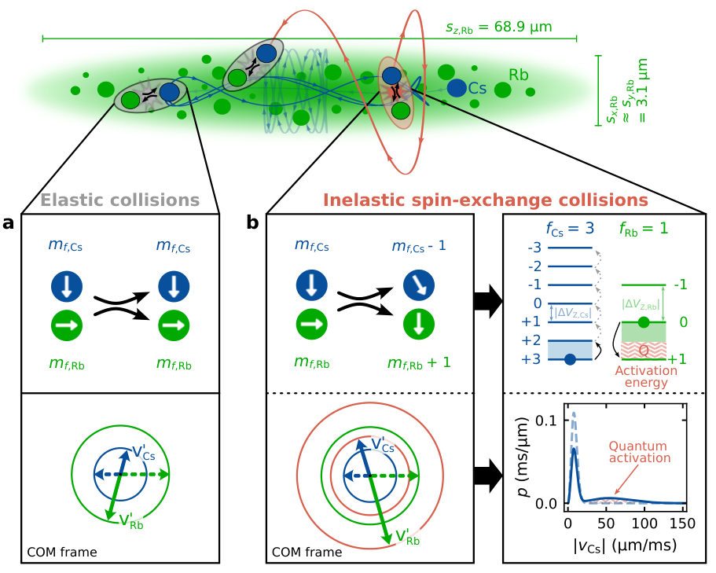
<figcaption class="paper-figure-caption"><b>Fig 1.</b> FIG. 1. Quantum mechanism breaking detailed balance. A 133Cs atom (blue) is immersed into a cigar-shaped, thermal bath of spin-polarized 87Rb atoms (green) with extents sx,Rb ≈sy,Rb and sz,Rb in the x-, y-, and z-direction, respectively. The in-trap motion of the Cs atoms (solid line) is influenced by elastic collisions (gray) and inelastic spin-exchange collisions (red) with the Rb atoms. The spin-exchange collisions cause an activation, i.e., impart kinetic energy to the Cs atoms (red trajectory), enabling them to leave the Rb bath and traverse the optical dipole trap before eventually re-entering the bath and thermalizing due to elastic collisions (blue trajectory). a Frequent elastic...</figcaption>
</figure>
<figure class="paper-figure-card">
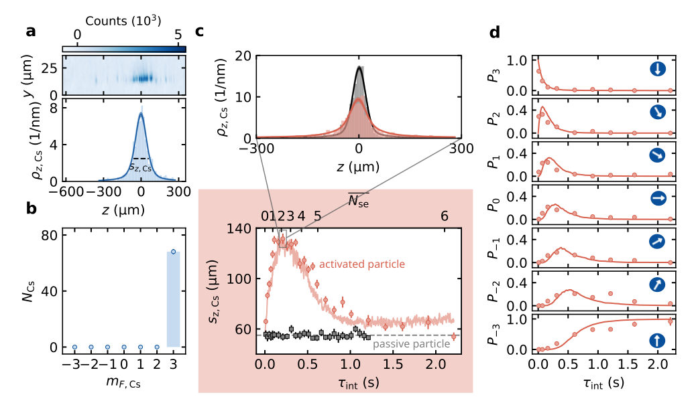
<figcaption class="paper-figure-caption"><b>Fig 2.</b> FIG. 2. Making Cs atoms active by internal state transitions. a Single-shot fluorescence image of Cs atoms after 1 s in the ODT. The histogram results from 30 independent experimental runs, and the solid blue line shows a fit of the density distribution with sz,Cs = 158(2) µm (black dashed line) and TCs = 2.4(1) µK. b Initial Cs spin distribution before the interaction with the Rb bath. c Evolution of the Cs density distribution at B = 2 G. Exothermal spin-exchange with Rb atoms in |1, 0⟩activates the Cs atoms, causing a significant broadening (red dots), which is absent for passive Cs atoms in a Rb bath in |1, 1⟩, where only elastic inter-species collisions are allowed (gray squares). The...</figcaption>
</figure>
<figure class="paper-figure-card">
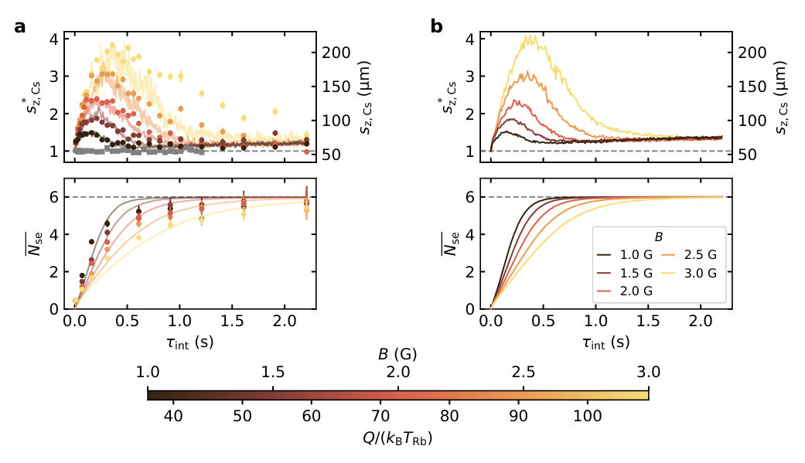
<figcaption class="paper-figure-caption"><b>Fig 3.</b> FIG. 3. Controlling the activation energy. a Evolution of the measured Cs density distribution for active (dots) and passive (gray squares) atoms (top), and the corresponding number-of-collisions evolution derived from the populations of the seven Cs Zeeman states (bottom). Widths s∗ z,Cs are normalized to the case without exothermal spin-exchange collisions (gray dashed line). Data points show averages over ≈90 independent experimental runs; solid lines correspond to event-driven Monte- Carlo collision simulations. Error bars either result from the fitting uncertainty of each density distribution fit or indicate the statistical uncertainties in the atom number. b Predicted Cs density...</figcaption>
</figure>
<figure class="paper-figure-card">
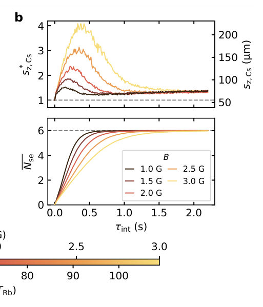
<figcaption class="paper-figure-caption"><b>Fig 4.</b> Figure 3a shows that increasing the magnetic field – and thus the activation energy Q – leads to a progres- sively stronger modification of the Cs density distribu- tion. We find that the width sz,Cs of an active Cs ensem- ble can exceed that of a passive one by nearly a factor of four at the largest magnetic field applied, B = 3 G, cor- responding to an activation energy of Q = kB × 110 TRb. This indicates that active Cs atoms can leave the Rb</figcaption>
</figure>
<figure class="paper-figure-card">
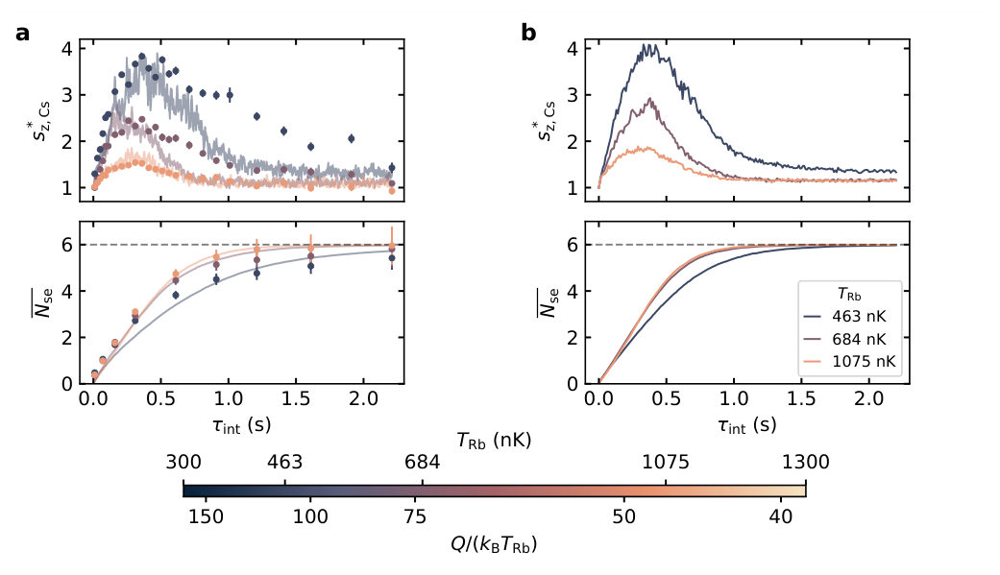
<figcaption class="paper-figure-caption"><b>Fig 5.</b> FIG. 4. Active diffusion in different temperature baths. a Measured evolution of the Cs density distribution (top) and corresponding number-of-collisions evolution (bottom). Widths s∗ z,Cs are normalized to the width of a passive Cs ensemble. Data points average ≈90 independent experimental runs; solid lines show results of event-driven Monte-Carlo simulations. Error bars either result from the fitting uncertainty of each density distribution fit or indicate the statistical uncertainties in the atom number. b Predicted Cs density distribution evolution (top) and corresponding number-of-collisions evolution (bottom) for active Cs atoms from the coarse-grained active Langevin model.</figcaption>
</figure>
</div>

<p><strong>Summary.</strong> The research experimentally demonstrates how single Cs atoms can become 'active' particles by harvesting energy from their surrounding Rb bath through inelastic quantum spin-exchange collisions. By coupling the discrete quantum spin dynamics to continuous motional motion, they develop and validate an active Langevin model that successfully predicts the transient broadening of the atomic density distribution. This work opens a novel platform for studying non-equilibrium thermodynamics at the fundamental single-atom scale.</p>
<p><strong>Why it may be interesting.</strong> This work sits at the intersection of AMO physics, non-equilibrium statistical mechanics, and quantum dynamics. The ability to engineer directed motion using internal quantum degrees of freedom in ultracold atoms is a major step toward quantum simulation of active matter.</p>
<details>
<summary>Detailed structure</summary>
<p><strong>Main problem.</strong> The primary challenge is realizing active matter at the fundamental atomic scale where quantum mechanical effects govern energy transfer, moving beyond classical descriptions.</p>
<p><strong>Main result.</strong> The authors experimentally demonstrate that individual Cs atoms can achieve directed, active motion by extracting internal spin energy from a surrounding Rb bath via inelastic quantum spin-exchange collisions. This establishes a quantum-enabled route to single-atom active matter.</p>
<p><strong>Method.</strong> The work combines experimental measurements of atomic density distributions with theoretical modeling using parameter-free active Langevin equations and event-driven Monte Carlo simulations derived from kinetic theory.</p>
<p><strong>Model / system.</strong> The system consists of individual Cs atoms confined in an optical dipole trap immersed in a thermal bath of Rb atoms. Activity is driven by inelastic s-wave spin-exchange collisions, which convert discrete internal spin energy into measurable kinetic motion.</p>
<p><strong>Key observables.</strong> Cs density distribution width (s_{z,Cs}), time delay of peak broadening, and the magnitude of the active force/energy injection ($Q$).</p>
<p><strong>Important parameters / regimes.</strong> Magnetic field strength (B), collision energy relative to activation energy ($E_c$ vs $Q$), and temperature of the bath ($  ext{T}_{    ext{Rb}}$).</p>
<p><strong>Assumptions / limitations.</strong> The Rb cloud is treated as a Markovian bath, and the activity mechanism relies on breaking detailed balance via non-reciprocal spin exchange rates.</p>
<p><strong>Figures summary.</strong> Figures illustrate the quantum mechanism (Fig. 1) showing energy transfer from spin to motion; later figures show density broadening measurements ($s_{z,	ext{Cs}}$) as a function of time and magnetic field, comparing theory/simulation to experiment.</p>
<p><strong>Paper structure.</strong> The paper progresses by establishing the physical system and quantum mechanism (spin-exchange), deriving the necessary theoretical framework (Langevin model from kinetic theory), presenting experimental measurements of activity signatures (density broadening), and finally validating the model against varying external parameters like magnetic field strength.</p>
</details>
<details>
<summary>Abstract</summary>
<p>Active matter comprises particles that extract energy from their local environment and convert it into motion. Although active particles have been miniaturized down to the nanoscale, realizing activity at the fundamentally smaller scale of individual atoms remains an open challenge, where quantum effects become increasingly relevant. Here, we experimentally demonstrate that individual Cs-133 atoms confined in an optical dipole trap extract energy from an ultracold bath of Rb-87 atoms via quantum-mechanical spin interactions and convert it into active motion. We quantitatively reproduce the resulting dynamics using a parameter-free active Langevin model derived from kinetic theory and support it with event-driven Monte Carlo collision simulations. The microscopic origin of activity is identified as quantum spin exchange, which transfers discrete internal spin energy into kinetic motion. Our work establishes a quantum-enabled route to active matter at the fundamental size limit of single atoms and opens perspectives for exploring the interplay of activity, quantum physics, and mesoscopic non-equilibrium thermodynamics.</p>
</details>
<p><sub><a href="#top">↑ back to top</a></sub></p>

<p><a id="paper-2606.24869"></a></p>
<h3 id="rapid-cavity-based-mid-circuit-measurement-and-feedforward-in-a-neutral-atom-array"><a href="http://arxiv.org/abs/2606.24869v1">Rapid Cavity-Based Mid-Circuit Measurement and Feedforward in a Neutral Atom Array</a></h3>
<p><strong>Authors:</strong> Tsai-Chen Lee, Jacquelyn Ho, Yue-Hui Lu, Tai Xiang, Nathaniel B. Vilas, Zhenjie Yan, Dan M. Stamper-Kurn<br>
<strong>Type:</strong> experiment · <strong>Category:</strong> other · <strong>PDF:</strong> <a href="https://arxiv.org/pdf/2606.24869v1">https://arxiv.org/pdf/2606.24869v1</a><br>
<strong>Analysis basis:</strong> full PDF text, analyzed in chunks
<strong>Topic relevance:</strong> 🔥 <code>QC/QI experiment</code> <strong>4/5</strong> · 🔥 <code>quantum measurements</code> <strong>4/5</strong> · <code>Tavis-Cummings &amp; cavity-many-emitter</code> <strong>3/5</strong> · <code>analog quantum simulation</code> <strong>3/5</strong> · <code>measurement-induced transitions</code> <strong>3/5</strong> · <code>quantum optics experiment</code> <strong>2/5</strong> · <code>Rydberg arrays</code> <strong>1/5</strong> · <code>correlated cavity matter</code> <strong>1/5</strong> · <code>non-equilibrium dynamics</code> <strong>1/5</strong></p>
<div class="figure-strip-hint">↔ Scroll figures horizontally</div>
<div class="paper-figures-scroll">
<figure class="paper-figure-card">
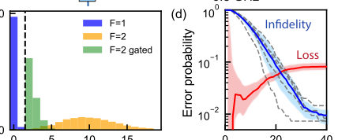
<figcaption class="paper-figure-caption"><b>Fig 1.</b> FIG. 1. Cavity detection of a 5-qubit atom array. (a) Experimental setup. AODs direct probe and shielding light onto each atom and AOMs control the light intensities. A single-photon counting mod- ule (SPCM) detects cavity emission. An FPGA processes the SPCM signal for adaptively gated measurement and feedforward control of a microwave driving field. (b) Probe light is detuned from the F = 2 to F ′ = 3 transition and resonant with the cavity. Shield- ing light shifts the average frequency of the F ′ = 3 levels, de- coupling the unmeasured qubits from near-resonant light. (c) His- tograms of cavity-emission photon counts in 40 µs of cavity detec- tion for atoms prepared in the F = 1...</figcaption>
</figure>
<figure class="paper-figure-card">
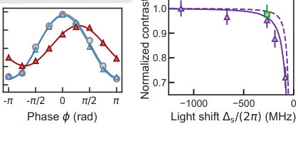
<figcaption class="paper-figure-caption"><b>Fig 2.</b> FIG. 2. Mid-circuit measurement and phase shift feedforward correc- tion. (a) Experimental sequence for the Ramsey measurement with echo. (b) Probability P5(↑) of atom q5 being measured in the |↑⟩ state after mid-circuit measurements of q1-q4 with shielded detun- ings of ∆s = −2π×1130 MHz (blue triangles) and ∆s = −2π×80 MHz (red triangles). Reference data taken without mid-circuit mea- surement are shown as gray circles. Solid curves are sinusoidal fits. (c) Ramsey phase shift (top) and normalized contrast (bottom) vs. ∆s without (purple triangles) and with (green squares) feedforward cor- rection. The gray shaded bar represents the uncertainty in the phase of the reference data. Solid...</figcaption>
</figure>
<figure class="paper-figure-card">
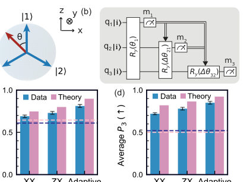
<figcaption class="paper-figure-caption"><b>Fig 3.</b> FIG. 3. Quantum-state discrimination and coherent state preparation using mid-circuit measurement and feedforward control. (a) Three atoms in an array are prepared identically in one of three possible single-particle states, shown on the Bloch sphere (blue arrows). A measurement and feedforward protocol is used to identify the initial state based on measurements on q1 and q2 and to prepare q3 coher- ently in the |↑⟩state, as confirmed by a final measurement on q3. The measurements are along axes defined by polar angles θi (red ar- row) for atoms qi. (b) Circuit diagram of the experimental protocol. Global microwave rotations by angles ∆θij = θi −θj are applied prior to measurements in the z...</figcaption>
</figure>
</div>

<p><strong>Summary.</strong> The research demonstrates fast mid-circuit measurement and feedforward control in an array of neutral atoms coupled to an optical cavity. By utilizing site-selective light shifts, they reduced the operational cycle time from milliseconds to microseconds while maintaining high fidelity. This breakthrough establishes a powerful tool for implementing complex quantum algorithms on atomic qubits.</p>
<p><strong>Why it may be interesting.</strong> This work directly addresses a major bottleneck—the measurement latency—in solid-state and neutral atom quantum computing architectures by integrating high-speed optical readout with real-time classical feedback.</p>
<details>
<summary>Detailed structure</summary>
<p><strong>Main problem.</strong> The core challenge is achieving fast, high-fidelity mid-circuit measurement and real-time feedforward control necessary for advanced quantum information protocols.</p>
<p><strong>Main result.</strong> The authors demonstrated a significant speedup, reducing the measurement-and-feedforward cycle time to below 100 $\mu$s, establishing optical cavities as a viable route for fast control in neutral atom arrays.</p>
<p><strong>Method.</strong> They employ site-selective illumination using near-resonant probe beams and coherence-shielding light shifts on neutral atoms trapped in an array coupled to a high-finesse optical cavity.</p>
<p><strong>Model / system.</strong> The platform is a neutral atom array (using $^{87}	ext{Rb}$) acting as qubits, interrogated via cavity Quantum Electrodynamics (QED) interactions. Control relies on precisely tuned light shifts and real-time classical feedback processing measurement outcomes.</p>
<p><strong>Key observables.</strong> Detection infidelity ($\le 1\%$), coherence reduction on unmeasured qubits ($\le 2\%$), and the cycle time ($< 100 \mu$s).</p>
<p><strong>Important parameters / regimes.</strong> Cavity coupling strength, probe/shielding detunings, measurement duration (optimized to $\sim 7-30 \mu$s), and feedback loop latency.</p>
<p><strong>Assumptions / limitations.</strong> The shielding mechanism is modeled using Hamiltonian diagonalization; the analysis assumes minimal crosstalk between neighboring sites during measurement.</p>
<p><strong>Figures summary.</strong> Figures illustrate the experimental setup, Ramsey measurements showing fidelity improvement with feedforward correction, and comparisons of state discrimination success probabilities between fixed and adaptive measurement schemes.</p>
<p><strong>Paper structure.</strong> The paper progresses from establishing the fundamental speedup via cavity coupling to demonstrating its application in complex tasks like Ramsey sequence fidelity enhancement, culminating in benchmarking optimal adaptive control for quantum state discrimination and preparation.</p>
</details>
<details>
<summary>Abstract</summary>
<p>Measuring part of a quantum system in the midst of its evolution and acting on the result in real time is essential for numerous quantum information protocols. Neutral-atom arrays are a leading platform for quantum information processing, but their mid-circuit measurement-and-feedforward cycle times have remained slow, typically exceeding 1 ms. Here we demonstrate fast mid-circuit measurement and real-time feedforward in an array of atomic qubits coupled to a high-finesse optical cavity. Local light shifts tune individual data qubits out of resonance with the cavity, shielding their coherence, while a near-resonant probe drives a selected qubit whose emission is collected with Purcell enhancement. Mid-circuit measurements of four qubits with sub percent infidelity reduce the coherence of a fifth unmeasured data qubit by less than 2%. We implement real-time feedforward to correct measurement-induced phase shifts and to realize an adaptive circuit for optimal quantum state discrimination and conditional state preparation. Our approach reduces the measurement-and-feedforward cycle time to below 100 $μ$s and establishes optical cavities as a route to fast control of neutral-atom quantum systems.</p>
</details>
<p><sub><a href="#top">↑ back to top</a></sub></p>

<p><a id="paper-2606.24310"></a></p>
<h3 id="non-adiabatic-transitions-in-the-density-matrix-formalism"><a href="http://arxiv.org/abs/2606.24310v1">Non-adiabatic transitions in the density matrix formalism</a></h3>
<p><strong>Authors:</strong> Pasquale Di Bari, Shreya Pandit, Ye-Ling Zhou<br>
<strong>Type:</strong> theory · <strong>Category:</strong> other · <strong>PDF:</strong> <a href="https://arxiv.org/pdf/2606.24310v1">https://arxiv.org/pdf/2606.24310v1</a><br>
<strong>Analysis basis:</strong> full PDF text, analyzed in chunks
<strong>Topic relevance:</strong> 🔥 <code>methods for driven-dissipative</code> <strong>4/5</strong> · <code>Keldysh / 2PI / non-Gaussian methods</code> <strong>3/5</strong> · <code>correlated / nonlocal dissipation</code> <strong>3/5</strong> · <code>driven-dissipative phase transition</code> <strong>3/5</strong> · <code>non-equilibrium dynamics</code> <strong>2/5</strong> · <code>non-equilibrium universality</code> <strong>2/5</strong> · <code>Kondo &amp; dissipative impurity</code> <strong>1/5</strong> · <code>analog quantum simulation</code> <strong>1/5</strong> · <code>measurement-induced transitions</code> <strong>1/5</strong> · <code>quantum measurements</code> <strong>1/5</strong></p>
<div class="figure-strip-hint">↔ Scroll figures horizontally</div>
<div class="paper-figures-scroll">
<figure class="paper-figure-card">
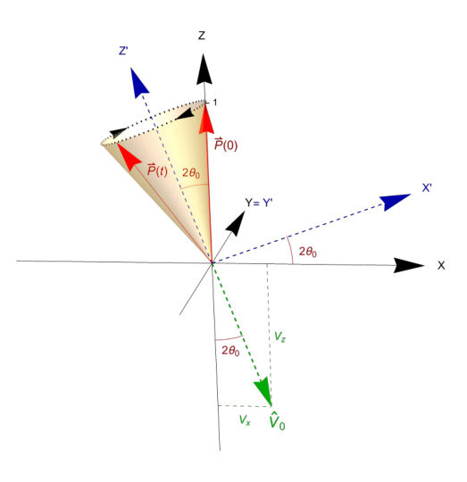
<figcaption class="paper-figure-caption"><b>Fig 1.</b> Figure 1: Graphical representation of the motion of the polarization vector in the case of time-independent Hamiltonian, corresponding to a constant potential vector ˆV0 ≡⃗V0/∆E0 = (sin 2θ0, 0, −cos 2θ0) for some generic θ0.</figcaption>
</figure>
<figure class="paper-figure-card">
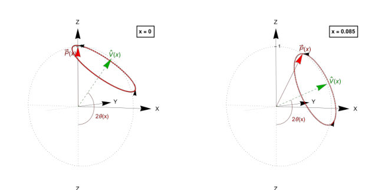
<figcaption class="paper-figure-caption"><b>Fig 2.</b> Figure 2: Representation of the polarisation and normalised potential vector ˆV (t) ≡ ⃗V (t)/∆E(t) in the case of the solar MSW effect with E = 10 MeV for the four indicated values of x ≡r/R⊙. Top left: t = r = 0, in this case one has ∆v(0) ≃1.576 and θ(0) ≃72◦. Top right: x ≃0.085, implying ∆v(x) ≃0.77 and θ(x) ≃56◦; Bottom left: resonance, xres ≃0.169, implying ∆v(xres) = cos 2θ12 ≃0.381 and θ(xres) = 90◦; Bottom right: x ≫xres, vacuum oscillations are recovered. However, notice that for very large x, neutrino oscillations fade away, since neutrino mass eigenstates propagate to a slightly different speed inducing decoherence. For this reason, when reaching the Earth, neutrinos are...</figcaption>
</figure>
<figure class="paper-figure-card">
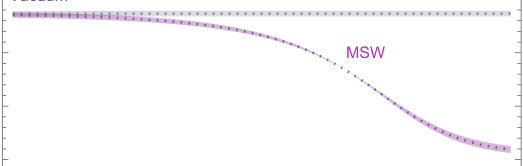
<figcaption class="paper-figure-caption"><b>Fig 3.</b> Figure 3: Survival probability of solar neutrinos as a function of the energy E: vacuum (grey), MSW (purple).</figcaption>
</figure>
</div>

<p><strong>Summary.</strong> This paper introduces and validates the use of the density matrix formalism to analyze non-adiabatic transitions in two-state quantum systems. It provides a powerful analytical solution that unifies descriptions ranging from the standard Landau-Zener approximation through highly non-adiabatic regimes, while also incorporating decoherence effects. This general framework has broad applications across quantum physics, including neutrino oscillations and cosmology.</p>
<p><strong>Why it may be interesting.</strong> This work is highly relevant as it provides a unified theoretical tool—the density matrix approach—to study quantum transitions across various physical contexts, including those involving dissipation or environmental coupling, which are central themes in open quantum systems research.</p>
<details>
<summary>Detailed structure</summary>
<p><strong>Main problem.</strong> The paper addresses the theoretical description of non-adiabatic transitions occurring in two-state quantum systems subjected to time-dependent Hamiltonians.</p>
<p><strong>Main result.</strong> It develops a general analytical framework using the density matrix formalism that successfully interpolates between known approximations (like LZSM) and regimes including decoherence effects.</p>
<p><strong>Method.</strong> The core method involves transforming the time evolution equation into a manageable Larmor-like differential equation for the polarization vector, allowing for systematic solution in different physical limits.</p>
<p><strong>Model / system.</strong> The primary model is a two-state quantum system whose dynamics are governed by the von Neumann equation (or Schrödinger equation). The analysis is benchmarked using neutrino flavor oscillations and can be extended to include decoherence via the Lindblad equation.</p>
<p><strong>Key observables.</strong> Transition probabilities ($P_{1	o 2}$), survival/appearance probabilities in neutrino physics, and the polarization vector components ($\vec{P}(t)$).</p>
<p><strong>Important parameters / regimes.</strong> The adiabaticity parameter ($\gamma$), resonance crossing probability ($P_c$), decoherence rate ($\Gamma(t)$), and system parameters like mass squared differences ($\Delta m^2$).</p>
<p><strong>Assumptions / limitations.</strong> Key approximations include assuming the two-state nature of the system, using specific parameterizations for the Hamiltonian, and analyzing limits such as the adiabatic or highly non-adiabatic regimes.</p>
<p><strong>Figures summary.</strong> Figures illustrate the evolution of polarization vectors and potential energy landscapes during phenomena like the MSW effect in solar neutrinos, comparing different physical regimes.</p>
<p><strong>Paper structure.</strong> The paper builds from establishing the density matrix formalism for two-state systems to deriving a general solution. It then applies this framework sequentially to analyze the adiabatic limit, the resonant crossing probability (reproducing LZSM), and finally extending the description to include decoherence effects.</p>
</details>
<details>
<summary>Abstract</summary>
<p>We show that a density matrix formalism provides a useful description of non-adiabatic transitions in two-state quantum systems.   Compared to a traditional Hamiltonian formalism, even in the absence of decoherence when there is full equivalence between the two, the density matrix formalism provides a convenient change of variables that yields a powerful general analytical solution. This solution nicely describes a transition regime between the well known Landau-Zener-Stuckelberg-Majorana (LZSM) approximation and the extremely non-adiabatic limit. Our results have very general applications, within a large variety of problems in quantum physics, neutrino physics, cosmology.</p>
</details>
<p><sub><a href="#top">↑ back to top</a></sub></p>

<p><a id="paper-2606.23894"></a></p>
<h3 id="when-does-dissipation-help-neural-surrogates-learn-open-quantum-dynamics"><a href="http://arxiv.org/abs/2606.23894v1">When does dissipation help neural surrogates learn open quantum dynamics?</a></h3>
<p><strong>Authors:</strong> Alauddin Ahmed<br>
<strong>Type:</strong> theory · <strong>Category:</strong> disordered systems and neural networks · <strong>PDF:</strong> <a href="https://arxiv.org/pdf/2606.23894v1">https://arxiv.org/pdf/2606.23894v1</a><br>
<strong>Analysis basis:</strong> full PDF text, analyzed in chunks
<strong>Topic relevance:</strong> 🔥 <code>methods for driven-dissipative</code> <strong>4/5</strong> · <code>analog quantum simulation</code> <strong>3/5</strong> · <code>driven-dissipative phase transition</code> <strong>3/5</strong> · <code>non-equilibrium dynamics</code> <strong>3/5</strong> · <code>Keldysh / 2PI / non-Gaussian methods</code> <strong>2/5</strong> · <code>non-equilibrium universality</code> <strong>2/5</strong> · <code>correlated / nonlocal dissipation</code> <strong>1/5</strong> · <code>entanglement &amp; information structure</code> <strong>1/5</strong> · <code>exotic spin models in light-matter</code> <strong>1/5</strong> · <code>quantum measurements</code> <strong>1/5</strong></p>
<div class="figure-strip-hint">↔ Scroll figures horizontally</div>
<div class="paper-figures-scroll">
<figure class="paper-figure-card">

<figcaption class="paper-figure-caption"><b>Fig 1.</b> Figure 1: Trajectory-averaged fidelity ¯Favg versus dimensionless dissipation strength γ/J at D = 2000, one line per system size n (markers show three-seed means; error bars show the seed standard deviation). The n = 2 and n = 3 curves use standard state-MSE training; the n = 4 curve uses the fidelity-aware loss (λTD = 0.1; §3.2) and includes the γ/J = 100 bounding point. n = 2 saturates near unity; n = 3 shows a broad sweet spot at γ/J ∈{0.1, 1} with a slight roll-off at γ/J = 10; n = 4 recovers monotonically and saturates by γ/J = 100, with the favorable regime shifted toward stronger damping relative to n = 3. The closed-system (γ = 0) point is offset to the left of the logarithmic axis...</figcaption>
</figure>
<figure class="paper-figure-card">
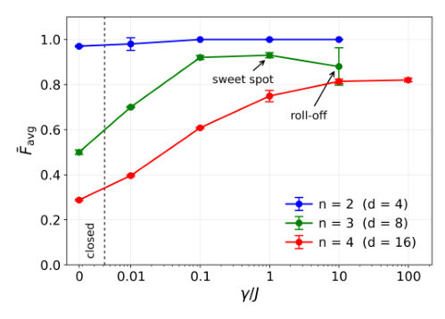
<figcaption class="paper-figure-caption"><b>Fig 2.</b> Figure 1 provides an overview of the central result: trajectory-averaged fidelity ¯Favg as a function of dis- sipation strength γ/J for each system size. The trends summarized there—near-saturation at n = 2, an inte- rior sweet spot at n = 3, and a damping-shifted recovery at n = 4—are developed in detail in this section and §5.</figcaption>
</figure>
<figure class="paper-figure-card">
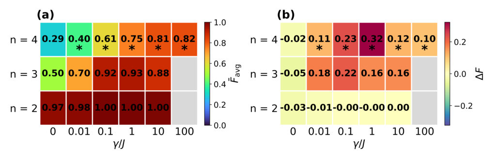
<figcaption class="paper-figure-caption"><b>Fig 3.</b> Figure 2: Neural ODE learnability across the n × γ sweep. (a) Trajectory-averaged fidelity ¯Favg. (b) The late-versus-early fidelity gap ∆F = ¯Flate −¯Fearly; positive values indicate higher accuracy in the late-time window. Cells marked with an asterisk (∗) at n = 4 were trained with the fidelity-aware loss (λTD = 0.1; §3.2); all other cells use standard state-MSE training. The γ/J = 100 column is a separately added bounding experiment for the n = 4 row only (§3.3); it is left blank at n = 2 and n = 3. Blank (grey) cells indicate combinations that were not simulated. See §3.3 for cell counts.</figcaption>
</figure>
<figure class="paper-figure-card">
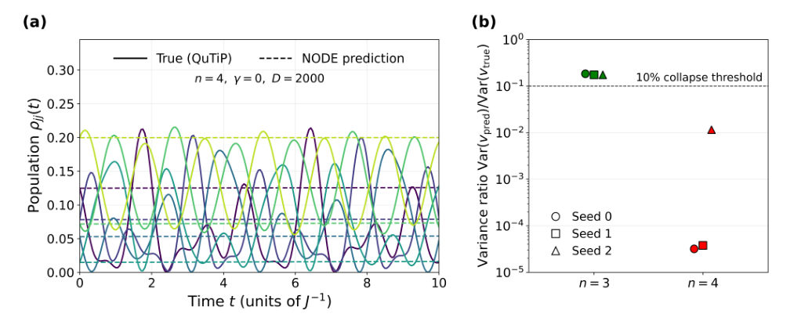
<figcaption class="paper-figure-caption"><b>Fig 4.</b> Figure 3: Closed-system (γ = 0) static-prediction collapse at n = 4. (a) True (solid) versus predicted (dashed) density-matrix populations ρjj(t) for a representative n = 4 test trajectory (the six most dynamically varying populations are shown); the true populations oscillate while the prediction is essentially frozen. (b) Flat-vector temporal-variance ratio Var(vpred)/Var(vtrue) across three seeds for n = 3 (partial learning, ≈18%) and n = 4 (static collapse, 0.003–1.16%); bars show seed means and points show individual seeds. The dashed line marks the 10% collapse threshold of the diagnostic.</figcaption>
</figure>
<figure class="paper-figure-card">
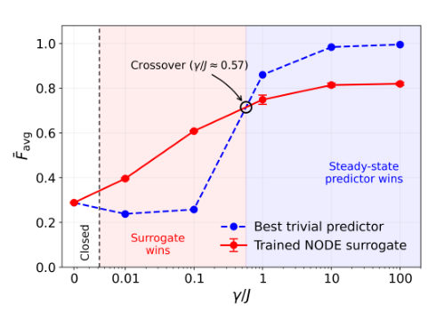
<figcaption class="paper-figure-caption"><b>Fig 5.</b> Figure 4: Trained NODE surrogate ¯Favg (solid, with seed standard deviation) versus the best trivial predictor at each γ (dashed; the higher of the static ρ(0) and steady-state |0 . . . 0⟩⟨0 . . . 0| baselines, per Table 1), for n = 4 at D = 2000. The curves cross near γ/J ≈0.57 (interpolated in log γ be- tween the γ/J = 0.1 and γ/J = 1 points): the surrogate adds value over trivial predictors at weak-to-moderate dissipation (left), and is matched or overtaken by the steady-state predic- tor under strong dissipation (right), where high ¯Favg reflects trajectory simplification rather than richer learned dynamics.</figcaption>
</figure>
</div>

<p><strong>Summary.</strong> The paper explores whether dissipation aids or hinders the ability of neural networks to learn open quantum dynamics in spin chains. It finds that while closed-system learning fails at larger sizes, moderate dissipation restores high fidelity by suppressing prediction errors. Crucially, it distinguishes between genuine dynamical learning and mere trajectory simplification toward a steady state.</p>
<p><strong>Why it may be interesting.</strong> This work directly addresses the intersection of quantum many-body physics (open systems) and machine learning methodologies, providing crucial guidelines on how to train neural models for complex physical dynamics while distinguishing true learning from numerical artifacts.</p>
<details>
<summary>Detailed structure</summary>
<p><strong>Main problem.</strong> The study investigates whether incorporating dissipation into open quantum dynamics helps or hinders the ability of Neural Ordinary Differential Equation (NODE) surrogates to accurately learn the system's time evolution.</p>
<p><strong>Main result.</strong> Dissipation can enhance learnability, particularly in weak-to-moderate regimes, by suppressing prediction errors; however, high fidelity at strong damping often reflects trivial steady-state contraction rather than genuine dynamical learning.</p>
<p><strong>Method.</strong> The authors train NODE surrogates using various loss functions—comparing standard state Mean Squared Error (MSE) against physics-informed, fidelity-aware objectives incorporating trace distance constraints.</p>
<p><strong>Model / system.</strong> The system is an open Heisenberg XYZ spin chain simulated via the GKSL master equation. Dissipation is introduced through local dephasing and amplitude damping channels acting on qubits up to $n=4$.</p>
<p><strong>Key observables.</strong> Trajectory-averaged Uhlmann fidelity ($ar{F}_{	ext{avg}}$), late-time vs. early-time fidelity gap ($\Delta F$), minimum eigenvalue ($\lambda_{\min}$), and comparison against static/steady-state predictors.</p>
<p><strong>Important parameters / regimes.</strong> System size ($n=2, 3, 4$ qubits), dimensionless dissipation strength ($\gamma/J \in \{0.01, 0.1, 1, 10, 100\}$), and loss function weighting parameters ($\lambda_{TD}$).</p>
<p><strong>Assumptions / limitations.</strong> The analysis assumes that the use of fidelity-aware losses is necessary to overcome the static collapse observed when using only state-MSE training for larger systems.</p>
<p><strong>Figures summary.</strong> Figures illustrate $ar{F}_{	ext{avg}}$ vs. $\gamma/J$ showing optimal regimes, and compare late-time versus early-time fidelity ($\Delta F$) to distinguish genuine dynamics from simple error suppression.</p>
<p><strong>Paper structure.</strong> The paper systematically compares learning performance across different system sizes ($n=2, 3, 4$) and dissipation strengths ($\gamma/J$), contrasting the failure modes of standard MSE training with the recovery achieved using advanced fidelity-aware loss functions.</p>
</details>
<details>
<summary>Abstract</summary>
<p>Dissipation is usually viewed as an obstacle to predicting quantum dynamics, yet it can also contract trajectories toward steady states and thereby suppress accumulated prediction errors, leaving it unclear whether dissipation ultimately helps or hinders the learnability of open quantum dynamics. We investigate this question using Neural Ordinary Differential Equation (NODE) surrogates for open Heisenberg XYZ spin chains. Closed-system learnability deteriorates rapidly with system size, culminating in a static-prediction collapse at four qubits; dissipation reverses this trend, creating a broad high-fidelity regime at intermediate system sizes, while at four qubits a fidelity-aware objective recovers learnable rollout structure that is absent under closed-system training. Comparison against static and steady-state baselines reveals that dissipation improves performance through two fundamentally different mechanisms: at weak-to-moderate dissipation the surrogate captures nontrivial transient dynamics and substantially outperforms trivial predictors, whereas at stronger damping high fidelity increasingly reflects trajectory simplification toward the steady state rather than improved learned dynamics. These results show that dissipation can enhance the learnability of open quantum dynamics, but that fidelity alone is insufficient to distinguish genuine dynamical learning from steady-state trivialization: dissipative contraction and trajectory simplification are distinct effects that peak in different regimes and should be disentangled when evaluating learned quantum-dynamical surrogates.</p>
</details>
<p><sub><a href="#top">↑ back to top</a></sub></p>

<p><a id="paper-2606.23817"></a></p>
<h3 id="revealing-high-dimensional-entanglement-through-symmetry"><a href="http://arxiv.org/abs/2606.23817v1">Revealing high-dimensional entanglement through symmetry</a></h3>
<p><strong>Authors:</strong> Jayden Webster, Florian Kanitschar, Emanuele Polino, Simon J. U. White, Sven Rogge, Farzad Ghafari, Marcus Huber, Nora Tischler<br>
<strong>Type:</strong> both · <strong>Category:</strong> quantum information and computing · <strong>PDF:</strong> <a href="https://arxiv.org/pdf/2606.23817v1">https://arxiv.org/pdf/2606.23817v1</a><br>
<strong>Analysis basis:</strong> full PDF text, analyzed in chunks
<strong>Topic relevance:</strong> 🔥 <code>entanglement &amp; information structure</code> <strong>4/5</strong> · <code>interference shaping light</code> <strong>3/5</strong> · <code>quantum measurements</code> <strong>3/5</strong> · <code>quantum optics experiment</code> <strong>3/5</strong> · <code>QC/QI experiment</code> <strong>2/5</strong> · <code>measurement-induced transitions</code> <strong>2/5</strong> · <code>analog quantum simulation</code> <strong>1/5</strong> · <code>methods for driven-dissipative</code> <strong>1/5</strong> · <code>non-equilibrium dynamics</code> <strong>1/5</strong></p>
<div class="figure-strip-hint">↔ Scroll figures horizontally</div>
<div class="paper-figures-scroll">
<figure class="paper-figure-card">
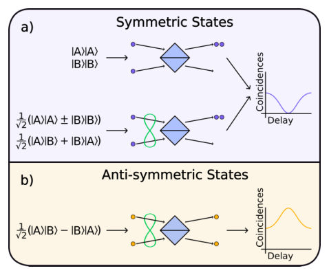
<figcaption class="paper-figure-caption"><b>Fig 1.</b> FIG. 1. Dependence of the HOM effect on particle exchange symmetry. a) If a two-particle state is symmet- ric under an exchange of particles, bunching occurs at the output of the HOM beamsplitter when these two particles are interfered. b) Conversely, if this state is anti-symmetric, anti-bunching occurs at the outputs.</figcaption>
</figure>
<figure class="paper-figure-card">
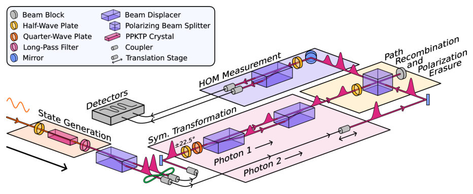
<figcaption class="paper-figure-caption"><b>Fig 2.</b> FIG. 2. Experimental setup. A type-II SPDC process is pumped by a 775 nm CW laser to generate a photon pair in the state described by Eq. (1) (orange panel). This pair is deterministically separated based on polarization and coupled to two separate paths (red panel). One photon in this pair is passed through a polarization-based unbalanced interferometer, where the two different transformations U± in Eq. (3) are selected by rotating a half-wave-plate at the beginning of the polarization Mach-Zehnder interferometer. The single-bin delay of U± on the other photon is implemented by a translation stage. Both photons are then passed through a polarizing beam splitter (yellow panel) to recombine...</figcaption>
</figure>
<figure class="paper-figure-card">
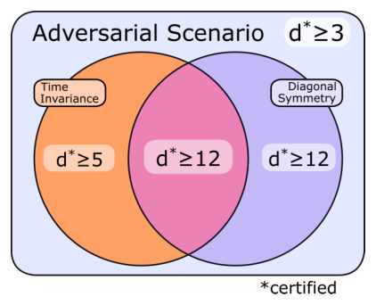
<figcaption class="paper-figure-caption"><b>Fig 3.</b> FIG. 4. Entanglement dimension certification. The minimum number of dimensions certified from the HOM data for different assumptions considered. Each lower bound is calculated from the worst-case scenario compatible with the experimental error.</figcaption>
</figure>
<figure class="paper-figure-card">
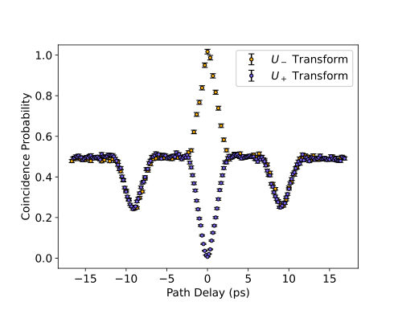
<figcaption class="paper-figure-caption"><b>Fig 4.</b> FIG. 3. HOM scans. Examples of the symmetric and anti- symmetric interference features, associated with the U± trans- forms, that arise as the two photons interfere during a HOM scan of relative path delay between the photons. The photons in this example plot were filtered by a 3 nm bandwidth filter centered at 1550 nm. The error bars here estimate the Poisso- nian fluctuation in the coincidence statistics and are too small to be clearly visible compared to the data points themselves.</figcaption>
</figure>
<figure class="paper-figure-card">
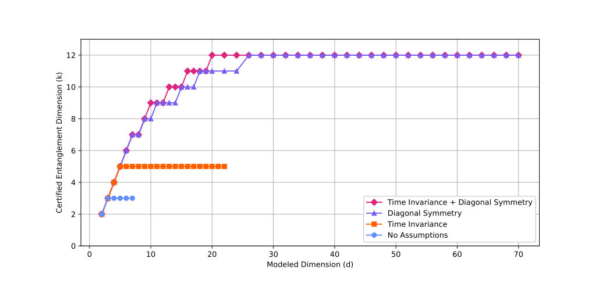
<figcaption class="paper-figure-caption"><b>Fig 5.</b> FIG. 5. Certified entanglement dimension, k, as a function of the modeled dimension, d for varying assumptions on the state</figcaption>
</figure>
</div>

<p><strong>Summary.</strong> The paper presents a novel linear-optical scheme to certify and lower-bound the dimensionality of entanglement in time-bin encoded photon pairs. By leveraging particle-exchange symmetry and performing measurements via Hong-Ou-Mandel interference, they overcome limitations of traditional characterization methods. This technique provides a scalable tool for verifying high-dimensional quantum resources.</p>
<p><strong>Why it may be interesting.</strong> This work provides a powerful, experimentally accessible tool for quantifying entanglement in high-dimensional photonic systems without requiring full state tomography, which is crucial for scaling quantum communication protocols.</p>
<details>
<summary>Detailed structure</summary>
<p><strong>Main problem.</strong> The primary challenge is developing a general method to characterize high-dimensional entanglement, particularly in time-bin encoded photonic states, which traditional methods struggle with due to measurement complexity.</p>
<p><strong>Main result.</strong> The authors developed a linear-optical scheme using particle-exchange symmetry that certifies high-dimensional entanglement and provides a rigorous lower bound on its dimensionality using only two simple dichotomic measurements.</p>
<p><strong>Method.</strong> The method combines Hong-Ou-Mandel (HOM) interference with unitary transformations ($U_{\pm}$) and formulates the problem as an optimization program, solved via Semidefinite Programming (SDP) relaxation to find a Schmidt number witness.</p>
<p><strong>Model / system.</strong> The system uses photons encoded in discrete time bins, generated via SPDC. The analysis focuses on bipartite states ($
ho$) evolving under specific symmetry operations related to particle exchange.</p>
<p><strong>Key observables.</strong> HOM coincidence probabilities ($C_{\exp, \pm}^{	ext{HOM}}$), visibility ($V$), and the entanglement dimension lower bound derived from SDP solutions.</p>
<p><strong>Important parameters / regimes.</strong> The certified entanglement dimensionality ($k$) relative to the modeled dimension ($d$); time-bin separation ($\sim 9.1 	ext{ ps}$); and measurement outcomes for symmetry projections.</p>
<p><strong>Assumptions / limitations.</strong> The approach relies on exploiting particle-exchange symmetry; approximations involve truncating evolved states back onto the initial subspace, which makes the bound conservative but robust.</p>
<p><strong>Figures summary.</strong> Figures illustrate HOM interference dependence on particle exchange symmetry (bunching/anti-bunching) and show how certified entanglement dimension increases with the inclusion of physical symmetries like time-invariance and diagonal symmetry.</p>
<p><strong>Paper structure.</strong> The paper develops a theoretical framework using SDP to bound entanglement dimensionality based on measured symmetry projections from HOM interference. It then details an experimental realization using linear optics on time-bin encoded photons, comparing results under various assumed symmetries (e.g., no assumptions vs. full physical constraints).</p>
</details>
<details>
<summary>Abstract</summary>
<p>Photons encoded in discrete time bins can be routinely prepared in temporal superposition states, enabling high-dimensional entanglement and enhanced quantum communication rates. However, characterizing this high-dimensional entanglement presents significant challenges, namely due to the involved measurement complexity or reliance on restrictive assumptions that compromise the generality of traditional approaches. Here, we develop and experimentally demonstrate a simple linear-optical scheme based on particle-exchange symmetry that allows us to probe high-dimensional entanglement in time-bin-encoded states. Combining Hong-Ou-Mandel interference with suitable transformations, our method not only certifies entanglement but also lower-bounds its dimensionality using only two dichotomic symmetry-based measurements. This bound is obtained through a new rigorous theoretical analysis and can be further improved by weak, physically motivated assumptions. The scheme remains effective at any timescale, even far below the temporal detector resolution used. Our work provides a powerful state-characterization tool and demonstrates that we can prove high-dimensional temporal entanglement on timescales inaccessible to the setup.</p>
</details>
<p><sub><a href="#top">↑ back to top</a></sub></p>

<p><a id="paper-2606.23909"></a></p>
<h3 id="generalized-fouriers-law-in-mesoscopic-systems"><a href="http://arxiv.org/abs/2606.23909v1">Generalized Fourier's law in mesoscopic systems</a></h3>
<p><strong>Authors:</strong> Luciano C. Lapas<br>
<strong>Type:</strong> both · <strong>Category:</strong> statistical mechanics · <strong>PDF:</strong> <a href="https://arxiv.org/pdf/2606.23909v1">https://arxiv.org/pdf/2606.23909v1</a><br>
<strong>Analysis basis:</strong> full PDF text, analyzed in chunks
<strong>Topic relevance:</strong> 🔥 <code>Keldysh / 2PI / non-Gaussian methods</code> <strong>4/5</strong> · <code>correlated / nonlocal dissipation</code> <strong>3/5</strong> · <code>methods for driven-dissipative</code> <strong>3/5</strong> · <code>non-equilibrium dynamics</code> <strong>3/5</strong> · <code>driven-dissipative phase transition</code> <strong>2/5</strong> · <code>non-equilibrium universality</code> <strong>2/5</strong> · <code>Kondo &amp; dissipative impurity</code> <strong>1/5</strong> · <code>analog quantum simulation</code> <strong>1/5</strong></p>
<div class="figure-strip-hint">↔ Scroll figures horizontally</div>
<div class="paper-figures-scroll">
<figure class="paper-figure-card">
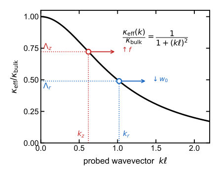
<figcaption class="paper-figure-caption"><b>Fig 1.</b> FIG. 1. Anisotropy from a single nonlocal kernel. The effective conductivity falls with the probed wavevector, κeff(k)/κbulk = [1 + (kℓ)2]−1. A TDTR experiment samples the through-plane direction at kz ∼d−1 p (f) and the in-plane direction at kr ∼w−1 0 , so a nominally isotropic crystal yields Λz ̸= Λr. Increasing the modulation frequency f (decreasing the spot size w0) shifts kz (kr) outward, selectively suppress- ing each channel.</figcaption>
</figure>
<figure class="paper-figure-card">
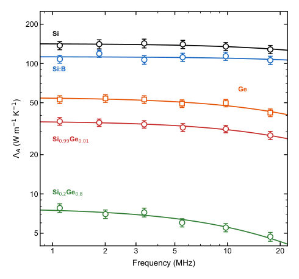
<figcaption class="paper-figure-caption"><b>Fig 2.</b> FIG. 2. Apparent thermal conductivity ΛA versus modula- tion frequency: the spatial-nonlocality model, Eq. (11) (solid lines), against TDTR data of Wilson and Cahill [10] (symbols, with error bars; digitized from their Fig. 3a at w0 = 10 µm). Fourier’s law predicts a constant ΛA; Si and Si:B stay flat while Ge and the SiGe alloys are suppressed at high f, where the shrinking penetration depth dp(f) probes a larger wavevector. Solid lines are two-parameter fits of Eq. (11); the resolved nonlocality lengths are ℓ= 0.41, 0.34 and 0.25 µm for Ge, Si0.99Ge0.01 and Si0.2Ge0.8, respectively.</figcaption>
</figure>
</div>

<p><strong>Summary.</strong> This work generalizes Fourier's law by deriving a nonlocal conductivity kernel using advanced statistical mechanics techniques. It shows that heat transport in mesoscopic materials exhibits spatial nonlocality, leading to measurable apparent anisotropy even when the material itself is isotropic. The framework successfully models experimental data from TDTR measurements on semiconductors.</p>
<p><strong>Why it may be interesting.</strong> While focused on thermal transport, the use of projection-operator formalism and memory kernels ($\kappa_{	ext{eff}}(\mathbf{k}, \omega)$) provides a rigorous theoretical framework for non-Markovian dynamics in open quantum systems, which is highly relevant to AMO physics.</p>
<details>
<summary>Detailed structure</summary>
<p><strong>Main problem.</strong> Fourier's law fails when energy carrier mean free paths are comparable to system length/time scales, necessitating a thermodynamically consistent generalization for heat transport in mesoscopic systems.</p>
<p><strong>Main result.</strong> The generalized conductivity is derived as a nonlocal memory operator $\kappa_{	ext{eff}}(\mathbf{k}, \omega)$, which predicts apparent anisotropy ($\Lambda_z 
eq \Lambda_r$) even in isotropic materials due to measurement geometry.</p>
<p><strong>Method.</strong> The authors combine Mesoscopic Nonequilibrium Thermodynamics with the Mori–Kubo–Zwanzig projection-operator formalism to derive the nonlocal constitutive relation.</p>
<p><strong>Model / system.</strong> The theory applies to heat conduction in mesoscopic systems (like Si/SiGe) involving energy carriers (phonons, electrons), modeling the transport using a generalized Fourier law incorporating memory and spatial nonlocality.</p>
<p><strong>Key observables.</strong> Apparent conductivities ($\Lambda_z$, $\Lambda_r$) measured via Time-Domain Thermoreflectance (TDTR); the nonlocal conductivity tensor $\kappa_{	ext{eff}}(\mathbf{k}, \omega)$.</p>
<p><strong>Important parameters / regimes.</strong> Nonlocality length scale ($\ell$), mean free path ($\ell_c$), and frequency/wavevector dependence ($k, \omega$).</p>
<p><strong>Assumptions / limitations.</strong> The analysis relies on linear response theory, the assumption of small deviations from equilibrium, and approximations like the minimal one-length ansatz for $\kappa_{	ext{eff}}(k)$.</p>
<p><strong>Figures summary.</strong> Figures illustrate how a single nonlocal kernel leads to apparent anisotropy ($\Lambda_z 
eq \Lambda_r$) and show theoretical fits comparing the predicted frequency roll-off of apparent conductivity against experimental TDTR data.</p>
<p><strong>Paper structure.</strong> The paper progresses from identifying the failure of Fourier's law, deriving the generalized nonlocal constitutive relation using projection operators, analyzing its consequences (anisotropy), and finally fitting these predictions to experimental measurements on semiconductor alloys.</p>
</details>
<details>
<summary>Abstract</summary>
<p>Fourier's law fails when the mean free path of the energy carriers becomes comparable to the length and time scales over which the temperature field varies. We derive a thermodynamically consistent generalization in which the conductivity is promoted to a nonlocal memory operator $\bmκ_{\mathrm{eff}}(\mathbf{k},ω)$, obtained by combining mesoscopic nonequilibrium thermodynamics with the Mori--Kubo--Zwanzig projection-operator formalism. The Onsager kernel decomposes exactly into a tensor sum over vibrational normal modes weighted by their Bose heat capacities and relaxation functions, and satisfies the second law by construction. Two consequences follow. First, because the modal weights carry the directional group velocity, the kernel is anisotropic, so a nominally isotropic crystal exhibits direction-dependent apparent conductivities $Λ_z\neqΛ_r$. Second, in a pump--probe experiment the modulation frequency does not introduce temporal memory but sets the probed wavevector through the thermal penetration depth, so the suppression of the apparent conductivity measured by time-domain thermoreflectance on Si, Ge and Si$_{1-x}$Ge$_x$ is a spatial-nonlocality effect set by a sub-micron carrier mean free path. Fitting the data of Wilson and Cahill yields nonlocality lengths of $0.25$--$0.4~μ$m consistent with the mean-free-path spectra of these crystals. The framework supplies a thermodynamic foundation for the two-channel ballistic/diffusive picture of nondiffusive heat transport.</p>
</details>
<p><sub><a href="#top">↑ back to top</a></sub></p>

<p><a id="paper-2606.24800"></a></p>
<h3 id="the-interplay-of-thermal-melting-and-pump-driven-melting-of-charge-order-a-two-temperature-study-of-the-holstein-model"><a href="http://arxiv.org/abs/2606.24800v1">The Interplay of Thermal Melting and Pump Driven Melting of Charge Order: A Two-Temperature Study of the Holstein Model</a></h3>
<p><strong>Authors:</strong> Debraj Bose, Sankha Subhra Bakshi, Pinaki Majumdar<br>
<strong>Type:</strong> theory · <strong>Category:</strong> strongly correlated electrons · <strong>PDF:</strong> <a href="https://arxiv.org/pdf/2606.24800v1">https://arxiv.org/pdf/2606.24800v1</a><br>
<strong>Analysis basis:</strong> full PDF text, analyzed in chunks
<strong>Topic relevance:</strong> 🔥 <code>non-equilibrium dynamics</code> <strong>4/5</strong> · <code>Keldysh / 2PI / non-Gaussian methods</code> <strong>3/5</strong> · <code>driven-dissipative phase transition</code> <strong>3/5</strong> · <code>methods for driven-dissipative</code> <strong>3/5</strong> · <code>non-equilibrium universality</code> <strong>2/5</strong> · <code>Frenkel-Kontorova</code> <strong>1/5</strong> · <code>analog quantum simulation</code> <strong>1/5</strong> · <code>correlated / nonlocal dissipation</code> <strong>1/5</strong> · <code>correlated cavity matter</code> <strong>1/5</strong></p>
<div class="figure-strip-hint">↔ Scroll figures horizontally</div>
<div class="paper-figures-scroll">
<figure class="paper-figure-card">
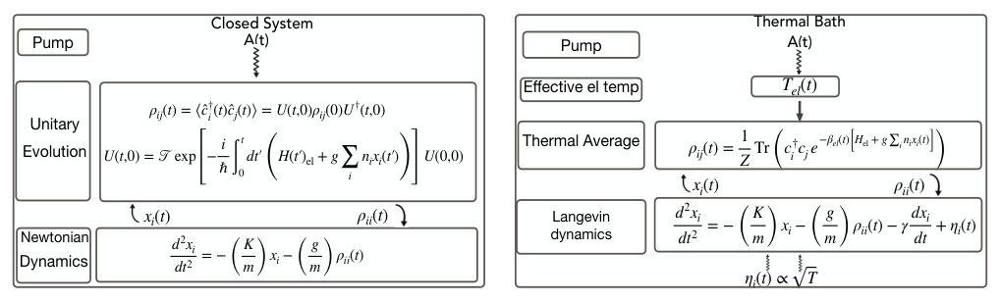
<figcaption class="paper-figure-caption"><b>Fig 1.</b> FIG. 1. Schematic of two methods. Left: the response of a closed system (no thermal bath) to a pump pulse. The electrons ‘see’ the pump pulse and the phonon fluctuations, while the phonons see the fluctuating electron density. The system as a whole is energy conserving once the pump pulse passes. Right: the ‘two temperature’ version of an open system. Here the pump generates an effective electron temperature Tel(t) and electronic properties are computed as a thermal average at this temperature and in the background of instantaneous phonons. The phonons in turn see the instantaneous electron density. This scheme is valid provided Tel and the phonons vary on a timescale much greater than...</figcaption>
</figure>
<figure class="paper-figure-card">
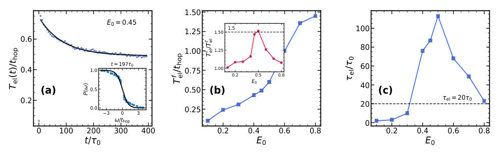
<figcaption class="paper-figure-caption"><b>Fig 2.</b> FIG. 2. Calibration of the electronic-temperature quench from closed-system pump dynamics. (a) Tel(t) extracted from the instantaneous electronic population for E0 = 0.45, with an exponential fit. The inset shows a representative Fermi-function fit to P(ω). (b) T f (and the ratio T i el/T f el in the inset) as a function of the pump strength E0. (c) Extracted relaxation time τel.</figcaption>
</figure>
<figure class="paper-figure-card">

<figcaption class="paper-figure-caption"><b>Fig 3.</b> FIG. 4. Transient loss and recovery of charge order. Weak pumping, T f el/thop = 0.3, suppresses SQ without fully destroy- ing it, while strong pumping, T f el/thop = 0.7, can nearly ex- tinguish the order. Left panels show individual trajectories and right panels show noise-averaged results.</figcaption>
</figure>
<figure class="paper-figure-card">

<figcaption class="paper-figure-caption"><b>Fig 4.</b> FIG. 5. Recovery time τrec as a function of the bath tem- perature, normalized by the corresponding charge-ordering transition temperature T CO bath(T f el), for different final electronic temperatures T f el. The inset shows T CO bath as a function of T f el.</figcaption>
</figure>
<figure class="paper-figure-card">

<figcaption class="paper-figure-caption"><b>Fig 5.</b> FIG. 3. Energy dynamics after the pump for closed and open systems at E0 = 0.47. The open system has T f el = 0.5thop and Tbath = 0.05thop, and relaxes to a two-temperature quasi- steady state rather than to equilibrium at Tbath.</figcaption>
</figure>
</div>

<p><strong>Summary.</strong> The research models charge order melting in electron-phonon systems under strong laser pumping by coupling the system to a thermal bath. Using a two-temperature approximation, it distinguishes between disorder caused by lattice fluctuations (bath temperature) versus electronic excitation energy ($T_{el}$). The findings map out a phase diagram showing that local distortion and long-range coherence melt via distinct mechanisms.</p>
<p><strong>Why it may be interesting.</strong> This work directly addresses non-equilibrium many-body physics in correlated materials, using techniques relevant to understanding ultrafast photoinduced transitions common in quantum optics and condensed matter theory.</p>
<details>
<summary>Detailed structure</summary>
<p><strong>Main problem.</strong> The study investigates how charge order, driven by electron-phonon coupling, melts and subsequently recovers following strong photoexcitation in a non-equilibrium setting.</p>
<p><strong>Main result.</strong> The paper distinguishes between thermal melting (loss of spatial coherence due to bath temperature) and pump-induced melting (direct suppression of local distortion amplitude), establishing a phase diagram controlling the transition regimes.</p>
<p><strong>Method.</strong> A two-temperature, stochastic mean-field approach is employed, treating electronic excitations via an effective time-dependent temperature ($T_{el}(t)$) while phonons interact with a thermal bath at $T_{bath}$.</p>
<p><strong>Model / system.</strong> The system is modeled using the spinless Holstein model, incorporating electron hopping, phonon dynamics, and coupling to both a laser pump (driving non-equilibrium electronic states) and an external thermal bath.</p>
<p><strong>Key observables.</strong> Order parameter ($S_Q$), local lattice displacement distribution ($P(x)$), Electronic Density of States (DOS), and recovery time ($ au_{rec}$).</p>
<p><strong>Important parameters / regimes.</strong> Bath temperature ($T_{bath}$), effective electronic temperature ($T_{el}(t)$), and the ratio $T_{el}/t_{hop}$.</p>
<p><strong>Assumptions / limitations.</strong> The primary approximations include modeling pump excitations via an effective $T_{el}(t)$ and assuming that variations in $T_{el}$ and phonons occur slowly compared to electron hopping.</p>
<p><strong>Figures summary.</strong> Figures illustrate the comparison between energy decay in closed vs. open systems, show time-dependent fitting of $T_{el}(t)$, and present a phase diagram mapping charge order survival against $T_{el}$ and $T_{bath}$.</p>
<p><strong>Paper structure.</strong> The paper first establishes the full Hamiltonian and then develops the two-temperature Langevin dynamics for the open system. It analyzes energy relaxation, characterizes the melting mechanisms via observables like $S_Q$ and $P(x)$, and concludes by mapping out a phase diagram.</p>
</details>
<details>
<summary>Abstract</summary>
<p>Charge order driven by electron-phonon coupling is well understood at equilibrium but pump-probe experiments raise a new question: how does this order melt and recover after strong photoexcitation? A pump pulse promotes carriers across the charge-order gap and creates a nonequilibrium high-energy electronic population. In a closed system the subsequent dynamics is constrained by energy conservation. In an <code>open system' - where the system is coupled to a thermal bath at some temperature $T_{\rm bath}$ - there are new fluctuation and dissipation processes at play. One can attempt a computational scheme that incorporates coupling of electrons to a laser pump, the coupling of system phonons to a thermal bath, and the Holstein interaction that couples electrons and phonons. We attempt an approximation where the pump induced electronic excitations are modeled by a slowly time varying</code>electron temperature', $T_{\rm el}(t)$, indicative of a quasi-equilibrium electronic state. We solve the problem for different combinations of $T_{\rm el}$ and $T_{\rm bath}$, probing the order parameter dynamics, the static properties and excitations in the long time <code>quasi steady state', and establish a</code>phase diagram' in terms of bath temperature and electron temperature.</p>
</details>
<p><sub><a href="#top">↑ back to top</a></sub></p>

<p><a id="paper-2606.24185"></a></p>
<h3 id="initial-state-dependent-dephasing-effect-in-non-hermitian-su-schrieffer-heeger-models"><a href="http://arxiv.org/abs/2606.24185v1">Initial-state-dependent dephasing effect in non-Hermitian Su-Schrieffer-Heeger models</a></h3>
<p><strong>Authors:</strong> Tao Min, Junjie Liu<br>
<strong>Type:</strong> theory · <strong>Category:</strong> statistical mechanics · <strong>PDF:</strong> <a href="https://arxiv.org/pdf/2606.24185v1">https://arxiv.org/pdf/2606.24185v1</a><br>
<strong>Analysis basis:</strong> full PDF text, analyzed in chunks
<strong>Topic relevance:</strong> 🔥 <code>methods for driven-dissipative</code> <strong>4/5</strong> · <code>correlated / nonlocal dissipation</code> <strong>3/5</strong> · <code>driven-dissipative phase transition</code> <strong>3/5</strong> · <code>non-equilibrium dynamics</code> <strong>2/5</strong> · <code>non-equilibrium universality</code> <strong>2/5</strong> · <code>Keldysh / 2PI / non-Gaussian methods</code> <strong>1/5</strong> · <code>Kondo &amp; dissipative impurity</code> <strong>1/5</strong> · <code>analog quantum simulation</code> <strong>1/5</strong> · <code>entanglement &amp; information structure</code> <strong>1/5</strong></p>
<div class="figure-strip-hint">↔ Scroll figures horizontally</div>
<div class="paper-figures-scroll">
<figure class="paper-figure-card">

<figcaption class="paper-figure-caption"><b>Fig 1.</b> Figure 1. (a) Sketch of the minimum four-site non-Hermitian SSH model with alternating hopping strengths η1 and η2, and alternat- ing gain and loss processes measured by strength γ. (b) Real (left panel) and imaginary (right panel) parts of the energy eigenvalues as a function of γ with η1 = 1 and η2 = 0.5. The inner grey and outer red vertical dashed lines indicate the locations of the excep- tional points at γ = ±√u−and γ = ±√u+, respectively, where u± = (2η2 1 + η2 2 ± η2 √</figcaption>
</figure>
<figure class="paper-figure-card">

<figcaption class="paper-figure-caption"><b>Fig 2.</b> Figure 2. Dynamical evolution of the trace distance D(t) in the closed non-Hermitian system. Upper panel: PT -unbroken phase. Lower panel: symmetry broken phase. (a) and (c) correspond to η1 = 0.5 and η2 = 1. (b) and (d) correspond to η1 = 1 and η2 = 0.5. The trace distance is computed for two initial conditions ˆρ1(0) = ∣S1⟩⟨S1∣and ˆρ2(0) = ∣S3⟩⟨S3∣.</figcaption>
</figure>
<figure class="paper-figure-card">

<figcaption class="paper-figure-caption"><b>Fig 3.</b> Figure 3. Time evolution of the trace distance D(t) in the APT - unbroken phase with γ = 1.5 under different initial state pairs. Up- per row [(a), (b)]: Initial states are ˆρ1(0) = ∣S1⟩⟨S1∣and ˆρ2(0) = ∣S3⟩⟨S3∣. Middle row [(c), (d)]: Initial states are ˆρ1(0) = ∣S1⟩⟨S1∣ and ˆρ2(0) = ∣S2⟩⟨S2∣. Lower row [(e), (f)]: Initial states are ˆρ1(0) = ∣S1⟩⟨S1∣and ˆρ2(0) = 0.5∣S1⟩⟨S1∣+0.5∣S2⟩⟨S2∣. Left panel: η1 = 0.5, η2 = 1. Right panel: η1 = 1, η2 = 0.5.</figcaption>
</figure>
<figure class="paper-figure-card">

<figcaption class="paper-figure-caption"><b>Fig 4.</b> Figure 4. Dynamics of the trace distance D(t) with varying dephas- ing strength γd obtained by directly evolving Eq. (8). (a) and (b) cor- respond to the PT -unbroken phase for γ = 0.1 and γ = 0.5, respec- tively. (c) and (d) correspond to the symmetry-broken phase for γ = 0.5 and γ = 1.0, respectively. (e) and (f) correspond to the APT - unbroken phase for γ = 1.5. Other parameters are η1 = 0.5, η2 = 1 for the left panel, and η1 = 1, η2 = 0.5 for the right panel. The initial states are ˆρ1(0) = ∣S1⟩⟨S1∣and ˆρ2(0) = 1</figcaption>
</figure>
<figure class="paper-figure-card">

<figcaption class="paper-figure-caption"><b>Fig 5.</b> Figure 5. Dynamics of the trace distance D(t) with varying dephas- ing strength γd obtained by directly evolving Eq. (8). (a) and (b) correspond to the PT -unbroken phase for γ = 0.1 and γ = 0.5, re- spectively. (c) and (d) correspond to the symmetry-broken phase for γ = 0.5 and γ = 1.0, respectively. (e) and (f) correspond to the APT -unbroken phase for γ = 1.5. Other parameters are η1 = 0.5, η2 = 1 for the left panel, and η1 = 1, η2 = 0.5 for the right panel. The initial states are ˆρ1(0) = ∣S1⟩⟨S1∣and ˆρ2(0) = ∣S2⟩⟨S2∣.</figcaption>
</figure>
</div>

<p><strong>Summary.</strong> The paper analyzes open quantum dynamics in non-Hermitian SSH models subjected to pure dephasing. It reveals that the decay of quantum information (measured by trace distance) is highly dependent on the initial state, leading to phenomena like partial or complete stabilization rather than simple exponential decay. This work highlights a complex interplay between system symmetry and dissipation effects.</p>
<p><strong>Why it may be interesting.</strong> This work provides a detailed, non-trivial understanding of how dissipation (dephasing) interacts with engineered non-Hermiticity, revealing that information loss is not monotonic but can be stabilized or even suppressed depending on the initial quantum state.</p>
<details>
<summary>Detailed structure</summary>
<p><strong>Main problem.</strong> The study investigates how pure dephasing affects the dynamical evolution of non-Hermitian quantum systems, particularly focusing on initial-state-dependent effects.</p>
<p><strong>Main result.</strong> Dephasing can lead to two distinct stabilization mechanisms—partial or complete—and exhibits an unconventional protective effect in certain symmetry phases. The dynamics are strongly dependent on the specific initial state chosen.</p>
<p><strong>Method.</strong> The analysis uses the quantum Lindblad master equation, solving for the trace distance evolution under pure dephasing and employing strong-dephasing limits to linearize population dynamics.</p>
<p><strong>Model / system.</strong> The model is a finite-sized non-Hermitian Su-Schrieffer-Heeger (SSH) lattice with alternating gain and loss in real space. The dynamics are governed by the Lindblad master equation, allowing exploration of PT and APT symmetry phases.</p>
<p><strong>Key observables.</strong> Trace distance ($D(t)$), population elements ($
ho_{nn}$), and the Liouvillian gap ($\Delta E$).</p>
<p><strong>Important parameters / regimes.</strong> Dephasing strength ($\gamma_d$), non-Hermiticity parameters ($\eta_1, \eta_2$), and system size (up to 40 sites).</p>
<p><strong>Assumptions / limitations.</strong> The analysis often relies on the strong dephasing limit ($\gamma_d 	o \infty$) or weak-dephasing perturbation theory.</p>
<p><strong>Figures summary.</strong> Figures illustrate phase diagrams based on symmetry, and show $D(t)$ evolution for different initial states in both small (4-site) and large (40-site) systems, demonstrating stabilization regimes.</p>
<p><strong>Paper structure.</strong> The paper progresses from establishing the physical model and symmetries to analyzing the general dynamics under dephasing. It then details specific mathematical techniques—like linearization in the strong limit or perturbation theory for gap analysis—to derive quantitative results on state decay and stabilization.</p>
</details>
<details>
<summary>Abstract</summary>
<p>Understanding the dynamical evolution of non-Hermitian systems under extra external dissipation is essential. Dephasing, a major realistic dissipation, is conventionally considered detrimental to information processing. However, its impact on non-Hermitian systems remains largely unexplored. Here, we focus on finite-sized non-Hermitian Su-Schrieffer-Heeger (SSH) lattice models with alternating gain and loss in real space and examine the dynamical evolution of the trace distance under pure dephasing. By tuning system parameters, this model supports phases with either parity-time or anti-parity-time symmetries, enabling us to explore the interplay between dephasing and different non-Hermitian symmetries. While the trace distance exhibits distinct dynamical behaviors across the different phases in the absence of dephasing, its response to dephasing is largely symmetry-independent but instead initial-state dependent. By varying initial states, we observe that increasing the dephasing strength can either merely accelerate the decay of the trace distance or stabilize it. Interestingly, we reveal two kinds of dephasing-induced stabilization that differ in the strong dephasing limit: a partial stabilization, where the trace distance approaches a finite value smaller than its initial value in the long-time limit, and a complete stabilization, where the trace distance remains at its initial value throughout the entire evolution. By analyzing the equation of motion, we attribute the initial-state dependent dephasing effect to the alternating gain and loss in the system and confirm its absence in Hermitian counterparts. Furthermore, in the anti-parity-time symmetry unbroken phase, we identify a continuous suppression-upon increasing the dephasing strength-of the otherwise exponential decay of the trace distance seen in the absence of dephasing.</p>
</details>
<p><sub><a href="#top">↑ back to top</a></sub></p>

<p><a id="paper-2606.23822"></a></p>
<h3 id="quantum-turbulence-in-the-many-body-regime"><a href="http://arxiv.org/abs/2606.23822v1">Quantum turbulence in the many-body regime</a></h3>
<p><strong>Authors:</strong> Sayak Bhattacharjee, Mahendra K. Verma, Alexander V. Balatsky, Srinivas Raghu<br>
<strong>Type:</strong> theory · <strong>Category:</strong> quantum gases · <strong>PDF:</strong> <a href="https://arxiv.org/pdf/2606.23822v1">https://arxiv.org/pdf/2606.23822v1</a><br>
<strong>Analysis basis:</strong> full PDF text, analyzed in chunks
<strong>Topic relevance:</strong> 🔥 <code>non-equilibrium dynamics</code> <strong>4/5</strong> · <code>analog quantum simulation</code> <strong>3/5</strong> · <code>non-equilibrium universality</code> <strong>3/5</strong> · <code>driven-dissipative phase transition</code> <strong>2/5</strong> · <code>methods for driven-dissipative</code> <strong>2/5</strong> · <code>Frenkel-Kontorova</code> <strong>1/5</strong> · <code>Keldysh / 2PI / non-Gaussian methods</code> <strong>1/5</strong> · <code>correlated / nonlocal dissipation</code> <strong>1/5</strong> · <code>entanglement &amp; information structure</code> <strong>1/5</strong></p>
<div class="figure-strip-hint">↔ Scroll figures horizontally</div>
<div class="paper-figures-scroll">
<figure class="paper-figure-card">

<figcaption class="paper-figure-caption"><b>Fig 1.</b> Figure 1. A cartoon of turbulence in a classical fluid in the fully-developed regime. An external drive (a force f) pumps</figcaption>
</figure>
<figure class="paper-figure-card">

<figcaption class="paper-figure-caption"><b>Fig 2.</b> Figure 2. Sketches of the one-dimensional energy spectrum in classical and quantum fully-developed turbulence, as a</figcaption>
</figure>
<figure class="paper-figure-card">

<figcaption class="paper-figure-caption"><b>Fig 3.</b> Figure 4. (a) [Figure reproduced with permission from Ref. [44]] Kolmogorov-like turbulence in a three-dimensional GP</figcaption>
</figure>
<figure class="paper-figure-card">

<figcaption class="paper-figure-caption"><b>Fig 4.</b> Figure 5. (a) [Figure reproduced with permission from Ref. [65]]. A cartoon picture of a superfluid and Mott insulator in two</figcaption>
</figure>
</div>

<p><strong>Summary.</strong> This paper reviews the complex field of quantum turbulence, focusing on where mean-field theories fail due to strong quantum fluctuations. It synthesizes knowledge from superfluids and lattice models to argue that a complete description requires advanced many-body techniques beyond simple Gross-Pitaevskii approximations. The work highlights open questions regarding universal scaling laws in these non-equilibrium quantum regimes.</p>
<p><strong>Why it may be interesting.</strong> This work is highly relevant as it bridges classical turbulence phenomenology with modern many-body physics, suggesting new theoretical frameworks needed to describe non-equilibrium dynamics in ultracold atomic systems.</p>
<details>
<summary>Detailed structure</summary>
<p><strong>Main problem.</strong> The paper addresses the theoretical challenge of understanding turbulent hydrodynamics in quantum many-body systems when strong quantum fluctuations are present, moving beyond mean-field descriptions.</p>
<p><strong>Main result.</strong> It establishes that while mean-field theories (like GP) capture classical inertial ranges, a full description requires accounting for strong quantum fluctuations, especially near critical points or at low dimensions.</p>
<p><strong>Method.</strong> The analysis synthesizes knowledge from continuum hydrodynamics (Euler/GP equations), lattice models (Bose-Hubbard), and field theory approaches to identify regimes where approximations break down.</p>
<p><strong>Model / system.</strong> The primary systems are superfluids, modeled using the Gross-Pitaevskii equation for mean-field analysis, but requiring extensions to second quantization or lattice Hamiltonians when fluctuations dominate. Specific examples include bosons in periodic potentials and low-dimensional condensates.</p>
<p><strong>Key observables.</strong> Energy spectrum scaling ($\sim k^{-5/3}$), quantized circulation, density fluctuation magnitude ($\delta n / \langle n
angle$), and the existence of multiple inertial ranges.</p>
<p><strong>Important parameters / regimes.</strong> Temperature ($T$), inter-vortex spacing ($\lambda$), healing length ($\xi$), and the ratio of quantum fluctuations to mean density ($\delta n / \langle n
angle$).</p>
<p><strong>Assumptions / limitations.</strong> The paper contrasts regimes: near equilibrium (classical/mean-field) versus far from equilibrium where strong quantum fluctuations necessitate going beyond standard approximations.</p>
<p><strong>Figures summary.</strong> Figures illustrate the energy cascade in classical vs. quantum turbulence, showing expected spectral deviations and phase diagrams for Bose-Hubbard models separating superfluid and Mott insulator phases.</p>
<p><strong>Paper structure.</strong> The discussion progresses from reviewing mean-field descriptions (GP equation) to identifying limitations when fluctuations are strong, then detailing lattice models (Bose-Hubbard), and finally outlining the necessity of quantum kinetic theory for a complete picture.</p>
</details>
<details>
<summary>Abstract</summary>
<p>We discuss phenomenology associated with turbulent hydrodynamics in quantum fluids from a condensed-matter perspective. We begin with weakly-interacting superfluids, often modeled by a mean-field theory governed by the Gross-Pitaevskii equation. Considering the effect of quantum fluctuations beyond the mean-field approximation, we propose a study of many-body quantum effects in turbulent hydrodynamics, especially near zero temperature. We motivate examples of quantum many-body systems where such effects may be uncovered. These include bosons confined in a periodic potential in low spatial dimensions (one and two), and the associated quantum critical point of the superfluid-insulator transition, realized in present-day ultracold-atom and quantum computing platforms. We conclude by listing a set of (open) questions that may be answered using modern quantum many-body techniques. This article is part of the theme issue 'Frontiers of turbulence and statistical physics'.</p>
</details>
<p><sub><a href="#top">↑ back to top</a></sub></p>

<p><a id="paper-2606.24242"></a></p>
<h3 id="monitoring-beam-splitter-entanglement-using-quantumness"><a href="http://arxiv.org/abs/2606.24242v1">Monitoring Beam Splitter Entanglement using Quantumness</a></h3>
<p><strong>Authors:</strong> Hua-Li Chen, Hsien-Yi Hsieh, Chien-Ming Wu, Ole Steuernagel, Ray-Kuang Lee<br>
<strong>Type:</strong> experiment · <strong>Category:</strong> quantum information and computing · <strong>PDF:</strong> <a href="https://arxiv.org/pdf/2606.24242v1">https://arxiv.org/pdf/2606.24242v1</a><br>
<strong>Analysis basis:</strong> full PDF text, analyzed in chunks
<strong>Topic relevance:</strong> 🔥 <code>quantum optics experiment</code> <strong>4/5</strong> · <code>entanglement &amp; information structure</code> <strong>3/5</strong> · <code>quantum measurements</code> <strong>3/5</strong> · <code>correlated / nonlocal dissipation</code> <strong>2/5</strong> · <code>measurement-induced transitions</code> <strong>2/5</strong> · <code>QC/QI experiment</code> <strong>1/5</strong> · <code>driven-dissipative phase transition</code> <strong>1/5</strong> · <code>interference shaping light</code> <strong>1/5</strong></p>
<div class="figure-strip-hint">↔ Scroll figures horizontally</div>
<div class="paper-figures-scroll">
<figure class="paper-figure-card">

<figcaption class="paper-figure-caption"><b>Fig 1.</b> FIG. 1. In our experiment two degenerate Optical Parametric Oscillators (OPOs), each generate single-mode squeezed va- cuum states with orthogonal squeezing angles, serving as ‘input states’, W 0, for a balanced (50%:50%) beam splitter (BS), yielding entangled output states, W ′, see Fig. 2. These are characterized by balanced homodyne detection (BHD) fed either separately or jointly into a spectrum analyzer.</figcaption>
</figure>
<figure class="paper-figure-card">

<figcaption class="paper-figure-caption"><b>Fig 2.</b> FIG. 2. The squeezed quadratures of the input states, W 0, have variances below the vacuum’s standard quantum limit (SQL), but they are above the SQL in the reduced output states W ′ I (10). Yet, the below-SQL fluctuations are not lost, the beam splitter has mapped them into reduced cross-mode variances Var(ˆx′ +) and Var(ˆp′ −), see Eqs. (11) and (1).</figcaption>
</figure>
<figure class="paper-figure-card">

<figcaption class="paper-figure-caption"><b>Fig 3.</b> FIG. 3. Positive values of 2-DC, for Duan’s criterion DC of Eq. (1), certify cross mode entanglement for all OPO-power settings, see Fig. 1, of our experiment. Table SI. 2 contains the experimentally determined values displayed here.</figcaption>
</figure>
<figure class="paper-figure-card">

<figcaption class="paper-figure-caption"><b>Fig 4.</b> FIG. 4. Quantumness, Ξa + Ξb, of modes before the beam splitter, rendered on OPO pump power grid, see Fig. 1.</figcaption>
</figure>
<figure class="paper-figure-card">

<figcaption class="paper-figure-caption"><b>Fig 5.</b> FIG. 5. Quantumness, Ξ′ + + Ξ′ −, after the beam splitter, and their differences, ∆Ξ = (Ξa + Ξb) −(Ξ′ + + Ξ′ −), rendered on OPO pump power grids, see Fig. 1. This rendering shows us that the experimental imperfections are random rather than due to systematic errors. Related experimental data are given in the Supplementary Information in tables SI. 1- SI. 3.</figcaption>
</figure>
</div>

<p><strong>Summary.</strong> The paper reports an experiment demonstrating how to monitor the entanglement generated between two squeezed vacuum states mixed at a beam splitter. Instead of relying solely on inseparability criteria, the authors use a novel measure called 'Quantumness' ($\Xi$). This approach allows them to quantitatively track and report on experimental losses by measuring the deviation from $\Xi$'s expected conservation across the optical setup.</p>
<p><strong>Why it may be interesting.</strong> This work provides a robust, quantitative method ($\Xi$) to benchmark continuous variable entanglement experiments by tracking non-classical features through complex optical components, which is highly relevant for developing scalable quantum light sources.</p>
<details>
<summary>Detailed structure</summary>
<p><strong>Main problem.</strong> The goal is to monitor entanglement generated by mixing two independent squeezed vacuum states using a beam splitter while accurately quantifying experimental imperfections.</p>
<p><strong>Main result.</strong> The authors introduce 'Quantumness' ($\Xi$) as a superior diagnostic tool that remains conserved under ideal beam mixing, allowing for precise quantification of losses due to experimental imperfections compared to standard entanglement witnesses.</p>
<p><strong>Method.</strong> They compare the quantumness ($\Xi$) calculated before and after passing through the beam splitter; deviations from conservation quantify the degradation caused by imperfect components.</p>
<p><strong>Model / system.</strong> The experiment uses a quantum-optical setup involving two independent squeezed vacuum states generated via Optical Parametric Oscillators (OPOs) and mixed at a balanced beam splitter to create an entangled Two-Mode Squeezed Vacuum state.</p>
<p><strong>Key observables.</strong> Quantumness ($\Xi$), quadrature variances ($ ext{Var}(x),    ext{Var}(p)$), and the difference in quantumness ($\Delta\Xi$) before and after mixing.</p>
<p><strong>Important parameters / regimes.</strong> OPO pump powers ($P_a, P_b$); the degree of squeezing relative to the Standard Quantum Limit (SQL).</p>
<p><strong>Assumptions / limitations.</strong> The method assumes that for Gaussian states, $\Xi$ faithfully tracks non-classicality, and that deviations from $\Xi$ conservation directly quantify experimental losses.</p>
<p><strong>Figures summary.</strong> Figures illustrate the setup schematic, show input squeezed quadratures below SQL, plot entanglement confirmation using Duan's criterion, and crucially compare calculated quantumness before and after beam mixing across varying pump powers.</p>
<p><strong>Paper structure.</strong> The paper first establishes the physical system (OPOs $
ightarrow$ BS), introduces Quantumness ($\Xi$) as a diagnostic tool superior to inseparability criteria, derives the conservation law for ideal mixing, and then presents experimental measurements comparing input vs. output quantumness under varying pump powers.</p>
</details>
<details>
<summary>Abstract</summary>
<p>We report on an experiment in which two independent squeezed vacuum states get entangled by mixing them with a balanced beam splitter. We follow standard practice and use an inseparability criterion to quantify their entanglement. However, this only allows us to witness the entanglement, but not to determine the deleterious effects of experimental imperfections due to the beam splitter mixing and the associated mode-mismatch and detection imperfections. We therefore introduce an alternative framework suitable for continuous variable systems using the states' quantumness, $Ξ$. We show that, under ideal circumstances, $Ξ$ is a conserved quantity under beam mixing. This allows us to benchmark the experiment's performance by comparing the states' quantumness $Ξ$ after the beam splitter mixing with $Ξ$ before. Such a comparison is not possible with entanglement witnesses, as the input states are unentangled. This highlights the main strength of our approach: its ability to generally quantify the quantumness of multi-mode continuous variable states and use this to probe different stages in an experiment.</p>
</details>
<p><sub><a href="#top">↑ back to top</a></sub></p>

<p><a id="paper-2606.24831"></a></p>
<h3 id="anyon-exchange-phase-from-antidot-interferometry"><a href="http://arxiv.org/abs/2606.24831v1">Anyon Exchange Phase from Antidot Interferometry</a></h3>
<p><strong>Authors:</strong> Matthias Thamm, Felix Puster, Bernd Rosenow<br>
<strong>Type:</strong> theory · <strong>Category:</strong> strongly correlated electrons · <strong>PDF:</strong> <a href="https://arxiv.org/pdf/2606.24831v1">https://arxiv.org/pdf/2606.24831v1</a><br>
<strong>Analysis basis:</strong> full PDF text, analyzed in chunks
<strong>Topic relevance:</strong> 🔥 <code>Keldysh / 2PI / non-Gaussian methods</code> <strong>4/5</strong> · <code>methods for driven-dissipative</code> <strong>3/5</strong> · <code>non-equilibrium dynamics</code> <strong>3/5</strong> · <code>driven-dissipative phase transition</code> <strong>2/5</strong> · <code>Kondo &amp; dissipative impurity</code> <strong>1/5</strong> · <code>analog quantum simulation</code> <strong>1/5</strong> · <code>interference shaping light</code> <strong>1/5</strong> · <code>non-equilibrium universality</code> <strong>1/5</strong></p>
<div class="figure-strip-hint">↔ Scroll figures horizontally</div>
<div class="paper-figures-scroll">
<figure class="paper-figure-card">

<figcaption class="paper-figure-caption"><b>Fig 1.</b> Figure 1. Fabry-Perot interferometer with a quantum an- tidot (a) of length L embedded in one arm. The upper (u) and lower (d) edges, held at biases +∆V/2 and −∆V/2, are connected by a quantum point contact (QPC) with tunneling amplitude γud, and the antidot couples to both edges through two further QPCs with tunneling amplitudes γua and γad, sep- arated by a distance b on the antidot and by a along each edge. The current Id is measured in drain D2.</figcaption>
</figure>
<figure class="paper-figure-card">

<figcaption class="paper-figure-caption"><b>Fig 2.</b> Figure 2. Transmission phase δ (upper panel) and oscilla- tion amplitude ˜I (lower panel) for tunneling through a single antidot level, versus gate voltage Vg at several temperatures, for ν = 1/3 anyons and a = 0. The Aharonov-Bohm part of the current is Id,AB ∝˜I cos(ϕAB + δ + π) [Eq. (10)], where the phase shift of π amounts to the Breit-Wigner phase below resonance, and ∆V is the bias between edges u and d. Re- gions in which the squared renormalized coupling at infrared scale, r, exceeds 0.5 are shown with dashed lines. In these regions, the lineshape is qualitative rather than quantitative. The interference current is largest near the edge chemical po- tentials Vg = ±∆V/2 (dotted...</figcaption>
</figure>
<figure class="paper-figure-card">

<figcaption class="paper-figure-caption"><b>Fig 3.</b> Figure 3. Non-equilibrium occupation n of the antidot [Eq. (9)] versus gate voltage Vg at several temperatures, for balanced couplings |γua| = |γad| = 0.25 e∗∆V (QPC transmis- sion of about 10–30%). The level fills as Vg increases, from empty at large negative Vg to full at large positive Vg. At Vg = −∆V/2 it aligns with the u-edge chemical potential and couples strongly to that edge, so the occupation rises above 1/2; at Vg = 0 in- and out-tunneling balance, giving n = 1/2; near Vg = +∆V/2 coupling to edge d dominates and n dips below 1/2 before saturating to unity. Temperature and level broadening smooth the curve.</figcaption>
</figure>
<figure class="paper-figure-card">

<figcaption class="paper-figure-caption"><b>Fig 4.</b> Figure 4. Transmission phase δ versus gate voltage Vg for tuning across two successive antidot levels, at kBT/e∗∆V = 0.025. The level spacing is ∆εa, so e∗Vg/∆εa = 0 and 1 mark the two level crossings. Each crossing reproduces the non- monotonic behavior of Fig. 2. Between crossings the phase depends on the antidot contact separation b, here decreasing approximately linearly for b = L/4.</figcaption>
</figure>
</div>

<p><strong>Summary.</strong> The paper theoretically investigates how to measure the intrinsic exchange phase of anyons in fractional quantum Hall systems using an antidot interferometer. By applying a non-equilibrium Keldysh formalism, the authors predict that the transmission phase will show unique non-monotonic behavior near resonance crossings. This signature allows for the direct extraction of the fundamental topological exchange phase $\pi
u$ from measurable interference patterns.</p>
<p><strong>Why it may be interesting.</strong> This work provides a concrete theoretical pathway to measure fundamental topological properties (anyon statistics) using measurable transport quantities like interference phase shifts, which is highly relevant for understanding strongly correlated electron systems.</p>
<details>
<summary>Detailed structure</summary>
<p><strong>Main problem.</strong> The primary goal is to directly measure the bare exchange phase ($    heta$) associated with anyons, which has been theoretically inaccessible despite prior measurements of fractional charge and braiding phase ($2	heta$).</p>
<p><strong>Main result.</strong> The authors predict that the transmission phase will exhibit a non-monotonic evolution when tuning the antidot through a resonance. This allows for the extraction of the bare exchange phase $    heta = \pi
u$ from the difference between interference current plateaus.</p>
<p><strong>Method.</strong> The study employs a systematic, non-equilibrium Keldysh formalism applied to an electronic T-matrix calculation, incorporating level broadening and antidot occupation effects.</p>
<p><strong>Model / system.</strong> The physical system is a quantum antidot embedded within a Fabry-Perot interferometer structure, designed to host quasiparticles behaving as anyons in fractional quantum Hall systems. The analysis models tunneling through this resonant structure.</p>
<p><strong>Key observables.</strong> Transmission phase ($\delta$), interference current ($I_{d,AB}$), and non-equilibrium antidot occupation ($n(V_g)$).</p>
<p><strong>Important parameters / regimes.</strong> The anyon statistics parameter $
u$ (e.g., 1/3) and the gate voltage $V_g$, which tunes the system through resonance.</p>
<p><strong>Assumptions / limitations.</strong> The analysis assumes that electrostatic screening by an external gate is necessary to isolate the bare statistical phase, and it uses perturbative expansions in tunneling couplings.</p>
<p><strong>Figures summary.</strong> Figures illustrate the non-monotonic evolution of the transmission phase ($\delta$) near resonances for anyons compared to monotonic behavior for electrons. Other figures detail antidot occupation dynamics and current calculations.</p>
<p><strong>Paper structure.</strong> The paper builds from defining the physical setup (antidot interferometer) to developing a rigorous Keldysh formalism that handles non-equilibrium effects, culminating in the prediction of phase signatures ($\delta$) that isolate the exchange phase $  heta$ via plateau analysis.</p>
</details>
<details>
<summary>Abstract</summary>
<p>Quasiparticles in fractional quantum Hall systems are anyons, carrying a fraction of the electron charge. Exchanging two of them gives rise to a fractional exchange phase. While the fractional charge and the braiding phase -- twice the exchange phase -- have been measured, the exchange phase itself has remained inaccessible. We study a quantum antidot embedded in a Fabry-Perot interferometer. Within a systematic non-equilibrium Keldysh treatment that consistently includes the occupation and level broadening of the antidot, we find that the transmission phase evolves non-monotonically when a gate voltage tunes the antidot through a resonance, in contrast to the monotonic evolution for electrons. The bare exchange phase can be extracted from the difference between the phase plateaus.</p>
</details>
<p><sub><a href="#top">↑ back to top</a></sub></p>

<p><a id="paper-2606.24205"></a></p>
<h3 id="from-spectral-singularities-to-multipartite-entanglement-scaling-at-higher-order-exceptional-points"><a href="http://arxiv.org/abs/2606.24205v1">From Spectral Singularities to Multipartite Entanglement Scaling at Higher-Order Exceptional Points</a></h3>
<p><strong>Authors:</strong> Chunlai Yang, Shuheng Liu, Xinyao Huang, Kaiye Shi, Qiongyi He<br>
<strong>Type:</strong> theory · <strong>Category:</strong> quantum information and computing · <strong>PDF:</strong> <a href="https://arxiv.org/pdf/2606.24205v1">https://arxiv.org/pdf/2606.24205v1</a><br>
<strong>Analysis basis:</strong> full PDF text, analyzed in chunks
<strong>Topic relevance:</strong> 🔥 <code>entanglement &amp; information structure</code> <strong>4/5</strong> · <code>analog quantum simulation</code> <strong>3/5</strong> · <code>driven-dissipative phase transition</code> <strong>2/5</strong> · <code>non-equilibrium universality</code> <strong>2/5</strong> · <code>Keldysh / 2PI / non-Gaussian methods</code> <strong>1/5</strong> · <code>Kondo &amp; dissipative impurity</code> <strong>1/5</strong> · <code>correlated / nonlocal dissipation</code> <strong>1/5</strong> · <code>methods for driven-dissipative</code> <strong>1/5</strong> · <code>non-equilibrium dynamics</code> <strong>1/5</strong></p>
<div class="figure-strip-hint">↔ Scroll figures horizontally</div>
<div class="paper-figures-scroll">
<figure class="paper-figure-card">

<figcaption class="paper-figure-caption"><b>Fig 1.</b> FIG. 1. (a) Schematic of interacting identical-qubit systems, where inter-qubit interactions give rise to genuine multipartite entanglement. (b) Permutation symmetry gives rise to a uni- versal block structure of the Hamiltonian matrix H, decom- posing the full Hilbert space into independent symmetry sec- tors hλ mλ. The fully symmetric sector hτ mτ corresponds to the largest block with dimension N +1. (c) In the non-Hermitian regime ( ˆH ̸= ˆH†), higher-order EPs can emerge. Near an nth-order EP, multipartite entanglement exhibits a fractional- power response to weak perturbations ∝δ1/n, thereby linking the entanglement scaling directly to the EP order.</figcaption>
</figure>
<figure class="paper-figure-card">

<figcaption class="paper-figure-caption"><b>Fig 2.</b> FIG. 2. (a) Schematic of an interacting two-qubit sys- tem and the corresponding EP conditions projected onto the interaction-parameter subspace (Jx, Jy, Jz), with γ as the en- ergy unit. The colored surface denotes the manifold of EP3s, with the blue region illustrating the real-Ωsolutions selected from Eq. (4). (b) EP conditions for the interacting three-qubit system in the same parameter subspace. Two exceptional lines of EP4s are obtained by expressing (Jx, Jy) as functions of Jz. The white triangle in (a) and the stars in (b) mark the parameters of the EP3 and EP4 used in (c) and (d), respec- tively. (c),(d) Imaginary parts of the n-sheeted Riemann sur- faces of the complex eigenvalues...</figcaption>
</figure>
<figure class="paper-figure-card">

<figcaption class="paper-figure-caption"><b>Fig 3.</b> FIG. 3. Schematic of the interacting four-qubit system with three-body interactions and its genuine multipartite concur- rence response of the five eigenstates, Ci (i = 1, . . . , 5), near an EP5 with ω/γ = 2×10−4. The inset shows the correspond- ing log-log behavior, confirming the fractional-power scaling |∆C| ∝δ1/5 with the perturbation strength δ = (Ω−ΩEP5)/γ.</figcaption>
</figure>
</div>

<p><strong>Summary.</strong> This theoretical paper connects higher-order Exceptional Points (EPs) in non-Hermitian systems to the behavior of genuine multipartite entanglement (GME). By exploiting permutation symmetry, the authors derive a general framework showing that GME exhibits a characteristic fractional-power scaling directly proportional to the inverse order of the EP. This establishes a fundamental link between spectral degeneracies and quantum correlations.</p>
<p><strong>Why it may be interesting.</strong> This work bridges spectral theory (non-Hermitian physics) and quantum information theory (entanglement), providing a powerful diagnostic tool: measuring entanglement scaling can reveal the underlying degeneracy order of the system's Hamiltonian.</p>
<details>
<summary>Detailed structure</summary>
<p><strong>Main problem.</strong> The research aims to develop a general theoretical framework linking higher-order non-Hermitian degeneracies (Exceptional Points, EPs) to the scaling behavior of genuine multipartite entanglement (GME). It seeks to establish a fundamental connection between these concepts in interacting quantum many-body systems.</p>
<p><strong>Main result.</strong> The study shows that GME inherits the spectral nonanalyticity near an $n$-th order EP, exhibiting a characteristic fractional-power scaling ($\Delta C \propto \delta^{1/n}$). Furthermore, it establishes that realizing higher-order EPs requires specific multi-body interaction channels.</p>
<p><strong>Method.</strong> The analysis utilizes permutation symmetry to decompose the Hilbert space of identical qubits and then analyzes the spectral response near an EP using perturbation theory, leading to a Puiseux series expansion for both energy eigenvalues and entanglement measures.</p>
<p><strong>Model / system.</strong> The model consists of interacting identical-qubit systems governed by a non-Hermitian Hamiltonian $\hat{H}$, which includes single-qubit terms and arbitrary $l$-body interaction terms (e.g., XYZ Heisenberg interactions). The system's structure is constrained by permutation symmetry.</p>
<p><strong>Key observables.</strong> Genuine Multipartite Entanglement (GME), spectral response, fractional-power scaling ($\delta^{1/n}$).</p>
<p><strong>Important parameters / regimes.</strong> The order of the Exceptional Point ($n$), the number of qubits ($N$), and the strength of weak perturbations ($\delta$).</p>
<p><strong>Assumptions / limitations.</strong> The Hamiltonian is assumed to preserve permutation symmetry; the analysis focuses on the leading-order scaling behavior near the EP.</p>
<p><strong>Figures summary.</strong> Figures schematically illustrate the connection between interacting identical-qubit systems, the block-diagonal structure imposed by permutation symmetry, and the resulting fractional-power response of multipartite entanglement near an EP.</p>
<p><strong>Paper structure.</strong> The paper first introduces EPs in non-Hermitian physics. It then leverages permutation symmetry to constrain the Hilbert space and analyze the system's degeneracy limit ($N+1$). The core is developing the framework linking this degeneracy structure directly to the scaling law of GME under weak perturbations, concluding with explicit examples requiring higher-order interactions.</p>
</details>
<details>
<summary>Abstract</summary>
<p>Exceptional points (EPs) are non-Hermitian spectral singularities exhibiting fractional-power responses, yet their implications for multipartite entanglement of interacting quantum many-body systems remain largely unexplored. Here we develop a general framework that links higher-order non-Hermitian degeneracies to the scaling behavior of genuine multipartite entanglement in interacting identical-qubit systems. Permutation symmetry of the identical qubits decomposes the exponentially large Hilbert space into independent irreducible-representation sectors, thereby constraining the maximal EP order of $N$ qubits to $N+1$ rather than $2^N$. Near an $n$th-order EP, genuine multipartite entanglement inherits the spectral response and generically exhibits a fractional-power scaling under weak perturbations. Explicit examples show that conventional two-body interactions support third- and fourth-order EPs with the corresponding entanglement responses, whereas higher-order EPs with genuine multipartite-entangled coalesced states require additional independent interaction channels, such as three-body interactions. Our results establish a fundamental connection among non-Hermitian degeneracies, multipartite entanglement, and symmetry, extending higher-order EP physics from spectral singularities to genuine many-body quantum correlations.</p>
</details>
<p><sub><a href="#top">↑ back to top</a></sub></p>

<p><a id="paper-2606.23803"></a></p>
<h3 id="infinite-level-hierarchy-of-solvable-quantum-circuits"><a href="http://arxiv.org/abs/2606.23803v1">Infinite-Level Hierarchy of Solvable Quantum Circuits</a></h3>
<p><strong>Authors:</strong> Michael A. Rampp, Suhail A. Rather, Pieter W. Claeys<br>
<strong>Type:</strong> theory · <strong>Category:</strong> statistical mechanics · <strong>PDF:</strong> <a href="https://arxiv.org/pdf/2606.23803v1">https://arxiv.org/pdf/2606.23803v1</a><br>
<strong>Analysis basis:</strong> full PDF text, analyzed in chunks
<strong>Topic relevance:</strong> 🔥 <code>entanglement &amp; information structure</code> <strong>4/5</strong> · <code>methods for driven-dissipative</code> <strong>3/5</strong> · <code>non-equilibrium dynamics</code> <strong>3/5</strong> · <code>non-equilibrium universality</code> <strong>2/5</strong> · <code>Keldysh / 2PI / non-Gaussian methods</code> <strong>1/5</strong> · <code>analog quantum simulation</code> <strong>1/5</strong> · <code>correlated / nonlocal dissipation</code> <strong>1/5</strong> · <code>driven-dissipative phase transition</code> <strong>1/5</strong></p>
<div class="figure-strip-hint">↔ Scroll figures horizontally</div>
<div class="paper-figures-scroll">
<figure class="paper-figure-card">

<figcaption class="paper-figure-caption"><b>Fig 1.</b> FIG. 1. Illustration of the full dual-unitary hierarchy and the logical inclusion of the conditions. The solvability conditions are illustrated in the folded picture. Each condition allow for the systematic removal of a single gate, where the gate depicted in dark purple is removed on the right-hand side of the associated solvability condition. Dual unitarity (DU) is the strongest and most constrained condition, followed by DU2. The complementary dual-unitarity conditions (DU∗𝑘≥3) we introduce in this paper are logically independent from the generalized dual-unitarity conditions (DU𝑘≥3). The DU∗𝑘conditions become stronger with increasing 𝑘, while the DU𝑘conditions weaken. The FDU𝑘...</figcaption>
</figure>
<figure class="paper-figure-card">

<figcaption class="paper-figure-caption"><b>Fig 2.</b> FIG. 2. Diagram illustrating the domain of solvability and rays of in- formation flow for FDU𝑘gates. The velocity separating the domains where DU𝑘and DU∗𝑘lead to solvability is given by 𝑣∗= (𝑘−2)/𝑘 (𝑘≥3). The correlation functions vanish exactly inside the DU𝑘 domain, and may be non-vanishing inside the DU∗𝑘domain.</figcaption>
</figure>
<figure class="paper-figure-card">

<figcaption class="paper-figure-caption"><b>Fig 3.</b> FIG. 3. Illustration of the possible reduced forms of a diagram in the thin path domain of a FDU4 circuit. The unreduced diagram has side lengths 𝑚= 6 and 𝑛= 5. All possible fully reduced forms are equivalent and of the form (a)-(d), up to rotation by 180 degrees.</figcaption>
</figure>
<figure class="paper-figure-card">

<figcaption class="paper-figure-caption"><b>Fig 4.</b> FIG. 4. Diagram illustrating possible forms of the ELT for FDU𝑘 circuits.</figcaption>
</figure>
<figure class="paper-figure-card">

<figcaption class="paper-figure-caption"><b>Fig 5.</b> FIG. 5. Applying the DU∗𝑘condition to a tensor network diagram representing a correlation function leads to the appearance of steps on the boundary of the diagram. These steps have height ℎ= 1 and are characterized by their width 𝑤𝑗. For DU∗𝑘, the steps can have a width of at most 𝑘−1.</figcaption>
</figure>
</div>

<p><strong>Summary.</strong> This paper introduces a comprehensive framework—the Full Dual-Unitary ($   ext{FDU}_k$) hierarchy—to achieve exact solvability for quantum circuits across the entire spacetime. By combining complementary unitarity conditions, the authors overcome previous limitations that restricted solvable regions to finite domains. This opens new avenues for precisely calculating correlation functions and entanglement dynamics in complex, non-integrable quantum systems.</p>
<p><strong>Why it may be interesting.</strong> The development of an infinite hierarchy of exactly solvable, non-integrable models provides powerful theoretical tools to study complex quantum many-body dynamics where standard integrability methods fail.</p>
<details>
<summary>Detailed structure</summary>
<p><strong>Main problem.</strong> The primary goal is to extend the solvability of quantum dynamics beyond the limitations of generalized dual-unitary circuits ($  ext{DU}_k$) to analyze correlation functions and entanglement dynamics across the entire spacetime.</p>
<p><strong>Main result.</strong> The authors introduce a novel, infinite hierarchy of conditions ($ ext{FDU}_k$) that remedies the finite spacetime restriction, allowing exact analysis of correlations and entanglement in all regions.</p>
<p><strong>Method.</strong> The work employs tensor network representations, algebraic constraint derivation from diagram consistency, and analyzing asymptotic behavior via quantum channels to characterize solvability domains.</p>
<p><strong>Model / system.</strong> The system is based on quantum circuits built with dual-unitary gates applied to qubits or qudits in a lattice geometry. The analysis focuses on the structure of these solvable dynamics across spacetime.</p>
<p><strong>Key observables.</strong> Correlation functions $C(x, t)$, Entanglement Line Tension ($    ext{ELT}$), and the solvability condition itself (FDU$_k$).</p>
<p><strong>Important parameters / regimes.</strong> The level of unitarity ($k$), the velocity $v$, and the local Hilbert space dimension ($q$).</p>
<p><strong>Assumptions / limitations.</strong> The analysis relies on constructing complementary dual-unitary conditions ($ ext{DU}^*_k$) to supplement the original hierarchy, and simplifying complex tensor network structures by considering extremal paths.</p>
<p><strong>Figures summary.</strong> Figures illustrate the logical inclusion of solvability domains ($ ext{FDU}_k =    ext{DU}^*_k +   ext{DU}_k$), show the piecewise linear nature of the ELT for $  ext{FDU}_k$ circuits, and depict tensor network diagrams.</p>
<p><strong>Paper structure.</strong> The paper systematically introduces the limitations of $   ext{DU}_k$, proposes the complementary conditions ($    ext{DU}^*_k$) to form $ ext{FDU}_k$, derives explicit formulas for correlators in different spacetime path domains (thin/thick), and finally analyzes entanglement scaling via the ELT.</p>
</details>
<details>
<summary>Abstract</summary>
<p>Dual-unitary circuits have emerged as a paradigm of exactly solvable yet non-integrable quantum dynamics. Recently, a generalization of dual unitarity attempting to extend the phenomenology of exactly solvable circuits has been introduced through a hierarchy of conditions, with dual unitarity as the first level. However, beyond the second level the proposed generalized dual-unitary hierarchy ceases to be solvable in the whole spacetime. We present an infinite hierarchy of solvability conditions remedying this problem. These new conditions can be combined with the generalized dual-unitary hierarchy to obtain circuits for which correlation functions and entanglement dynamics can be analyzed exactly in the whole spacetime. We show that this novel hierarchy possesses non-trivial solutions at every level. Our results demonstrate that dual unitarity can be systematically extended while preserving solvability, opening up investigations of exactly solvable non-integrable systems with more general properties.</p>
</details>
<p><sub><a href="#top">↑ back to top</a></sub></p>

<p><a id="paper-2606.24643"></a></p>
<h3 id="the-quantum-split-step-fourier-algorithm-for-nonlinear-optical-waveguides"><a href="http://arxiv.org/abs/2606.24643v1">The Quantum Split-Step Fourier Algorithm for Nonlinear Optical Waveguides</a></h3>
<p><strong>Authors:</strong> Fabio Biancalana<br>
<strong>Type:</strong> theory · <strong>Category:</strong> other · <strong>PDF:</strong> <a href="https://arxiv.org/pdf/2606.24643v1">https://arxiv.org/pdf/2606.24643v1</a><br>
<strong>Analysis basis:</strong> full PDF text, analyzed in chunks
<strong>Topic relevance:</strong> 🔥 <code>entanglement &amp; information structure</code> <strong>4/5</strong> · <code>methods for driven-dissipative</code> <strong>3/5</strong> · <code>non-equilibrium dynamics</code> <strong>3/5</strong> · <code>non-equilibrium universality</code> <strong>2/5</strong> · <code>Keldysh / 2PI / non-Gaussian methods</code> <strong>1/5</strong> · <code>correlated / nonlocal dissipation</code> <strong>1/5</strong> · <code>driven-dissipative phase transition</code> <strong>1/5</strong> · <code>interference shaping light</code> <strong>1/5</strong></p>
<div class="figure-strip-hint">↔ Scroll figures horizontally</div>
<div class="paper-figures-scroll">
<figure class="paper-figure-card">

<figcaption class="paper-figure-caption"><b>Fig 1.</b> FIG. 1: Spectral intensity | ˜A(ω, z)|2 (in log scale) for the initial soliton (blue solid line, z = 0) and the final field (red solid line, z = 7). The resonant-radiation band emerges near the phase-matched frequency ωRR ≃= −10.78 and progressively grows in amplitude and undergoes a slight shift towards more negative detunings, consistent with soliton recoil. Vertical green dashed lines indicate the analysis window used for the reduced Gaussian state. The third-order dispersion parameter is β3 = 0.05, and soliton amplitude is A0 = 3.</figcaption>
</figure>
<figure class="paper-figure-card">

<figcaption class="paper-figure-caption"><b>Fig 2.</b> FIG. 2: Von Neumann entropy (in nats) of the RR subsystem versus propagation distance. Since the global BdG state remains pure, this quantity is also the entanglement entropy between the RR spectral window and its complement. All parameters are as in Fig. 1.</figcaption>
</figure>
<figure class="paper-figure-card">

<figcaption class="paper-figure-caption"><b>Fig 3.</b> FIG. 3: Evolution of the total fluctuation population inside the RR spectral window. The continuous increase of ¯ NRR reflects the amplification and generation of quantum fluctuations associated with RR formation. All parameters are as in Fig. 1.</figcaption>
</figure>
<figure class="paper-figure-card">

<figcaption class="paper-figure-caption"><b>Fig 4.</b> FIG. 4: R´enyi-2 entropy (blue solid line, axis on the left) and purity (red solid line, axis on the right) of the RR reduced state. The loss of purity is entirely due to entanglement, since the global Gaussian state remains pure within the BdG approximation. All parameters are as in Fig. 1.</figcaption>
</figure>
<figure class="paper-figure-card">

<figcaption class="paper-figure-caption"><b>Fig 5.</b> FIG. 5: Mean occupations of individual FFT bins inside the resonant-radiation window at several propagation distances (different colours for different propagation distances, see the legend). Although many frequency bins become populated, this is a basis-dependent description that does not reveal the intrinsic structure of the Gaussian state. All parameters are as in Fig. 1.</figcaption>
</figure>
</div>

<p><strong>Summary.</strong> The paper introduces the Quantum Split-Step Fourier Algorithm (QSSF) to simulate nonlinear optical waveguides while explicitly tracking quantum entanglement. By monitoring observables like von Neumann entropy and purity, the authors demonstrate that resonant radiation generates significant, quantifiable entanglement between spectral components. This method proves invaluable for diagnosing quantum correlations in ultrafast light sources.</p>
<p><strong>Why it may be interesting.</strong> This work provides a powerful, quantitative tool—an information-theoretic diagnostic—to study quantum correlations in complex, non-equilibrium physical processes like supercontinuum generation, which is highly relevant to advanced quantum optics research.</p>
<details>
<summary>Detailed structure</summary>
<p><strong>Main problem.</strong> The primary goal is to develop a numerical framework to quantify quantum correlations, specifically entanglement, generated between different spectral bands during nonlinear optical wave propagation.</p>
<p><strong>Main result.</strong> The Quantum Split-Step Fourier Algorithm (QSSF) successfully demonstrates that resonant radiation generation leads to a steadily increasing von Neumann entropy and loss of purity in the selected spectral band. Furthermore, this highly correlated state is found to be effectively dominated by only a few Williamson modes despite occupying many Fourier bins.</p>
<p><strong>Method.</strong> The method employs the QSSF algorithm, which combines split-step propagation (Strang splitting) for the nonlinear Schrödinger equation with a commutator-preserving Bogoliubov evolution for Gaussian quantum fluctuations. This allows tracking second moments and entanglement measures dynamically.</p>
<p><strong>Model / system.</strong> The system is modeled as light propagating in nonlinear optical waveguides governed by the Nonlinear Schrödinger Equation (NLSE). The analysis linearizes quantum fluctuations around a strong classical mean field, leading to an effective Bogoliubov-deWitt-Gross evolution equation.</p>
<p><strong>Key observables.</strong> Von Neumann entropy ($S_{vN}$), purity, covariance matrices, symplectic eigenvalues ($
u_k$), and the effective number of occupied Williamson modes ($K_{   ext{eff}}$).</p>
<p><strong>Important parameters / regimes.</strong> Nonlinearity coefficient ($\gamma$), dispersion parameters ($eta_3$), propagation distance ($z$), and the spectral window size.</p>
<p><strong>Assumptions / limitations.</strong> The analysis assumes Gaussian quantum fluctuations, allowing the use of Bogoliubov theory. The method relies on linearizing the full quantum NLSE around a strong classical mean field and maintaining commutator-preserving evolution during splitting steps.</p>
<p><strong>Figures summary.</strong> Figures illustrate the spectral evolution showing resonant radiation (RR) growth; plots demonstrate the monotonic increase of entanglement entropy ($S_{vN}$) and photon population ($ar{N}_{	ext{RR}}$); and visualizations confirm that the quantum state compresses into a few dominant Williamson modes.</p>
<p><strong>Paper structure.</strong> The paper introduces the QSSF algorithm by detailing its components: splitting methods, Bogoliubov evolution for linear steps, and handling nonlinear coupling. It then applies this framework to simulate resonant radiation in waveguides, calculating various information-theoretic diagnostics like entropy and purity over propagation distance.</p>
</details>
<details>
<summary>Abstract</summary>
<p>We introduce the Quantum Split-Step Fourier (QSSF) algorithm for nonlinear optical waveguides, a numerical framework that combines split-step propagation of the nonlinear Schrödinger equation with a commutator-preserving Bogoliubov evolution of Gaussian quantum fluctuations. The method propagates the classical mean field together with the Bogoliubov matrices $U$ and $V$, from which reduced second moments, covariance matrices, symplectic eigenvalues, and entropic measures are constructed for arbitrary spectral windows. Applied to soliton-driven resonant radiation, QSSF shows that the selected radiation band acquires a steadily increasing von Neumann entropy and a corresponding loss of purity, quantifying its entanglement with the rest of the spectrum in the lossless Gaussian setting. The analysis also reveals a surprisingly pronounced low-dimensional structure: although the radiation occupies many Fourier bins, its reduced Gaussian state is dominated by only a few Williamson modes. QSSF therefore provides a practical information-theoretic diagnostic for quantum correlations in nonlinear frequency conversion, supercontinuum generation, and multimode squeezed-light formation in ultrafast waveguide platforms.</p>
</details>
<p><sub><a href="#top">↑ back to top</a></sub></p>
<hr>
<p>
<a href="index.html">← Index</a>
 · <a href="papers_02.html">Next →</a>
</p>
<hr>

</body>
</html>
